Úvod
MB Maniax Next Debugger je rozšíření pro Visual Studio Code (dále jen VS Code), které do editoru přidává emulátor ZX Spectra Next a ladicí nástroj (debugger). Program přeložený v sjasmplus se spustí v emulátoru postaveném na jádře JNEXT a vy ho ladíte přímo ve zdrojovém textu: zastavíte ho na řádku, prohlédnete si registry a paměť, krokujete instrukci po instrukci – a vedle kódu přitom vidíte obrazovku emulátoru.
Pokud jste zvyklí na CSpect nebo DeZog, mnoho věcí vám bude povědomých: instrukce
BREAK z CSpectu funguje, speciální komentáře WPMEM, LOGPOINT
a ASSERTION mají stejnou syntaxi jako v DeZogu. Rozdíl je v tom, že tu nic dalšího
neinstalujete ani nespouštíte – emulátor je součástí rozšíření.
Co rozšíření umí
- Breakpointy ve zdrojáku podle ladicích informací ze sjasmplus (soubor SLD), včetně 8K stránek Nextu – breakpoint v kódu ve stránkované paměti zastaví jen tehdy, když je jeho stránka namapovaná.
- Podmíněné breakpointy, které nezpomalují – podmínku (
A == 5,mem[counter] == 3,nextreg[$50] == 10,FRAME > 100…) vyhodnocuje přímo emulátor. Návěští ze zdrojáku se v podmínkách píšou přímo. - Počty průchodů (
3,>= 10,% 4) a logpointy, které místo zastavení vypíšou text s hodnotami. - Breakpointy na události stroje: přerušení IM 1 / IM 2, NMI, zápis do NEXTREG, vstup/výstup na port, Copper, DMA, reset.
- Watchpointy – zastavení při čtení nebo zápisu paměti.
- Krokování (Step Into / Over / Out), zásobník volání s návěštími, registry a příznaky (dají se měnit), stránky MMU, disassembler, prohlížení a úprava paměti, výrazy v panelu Watch a při najetí myší.
- Krok zpět (Step Back) – emulátor si pamatuje posledních 10 sekund.
- Start do NextZXOS – emulátor nabootuje opravdový NextZXOS a ladí se program, který NextZXOS spustí (NextZXOS se na požádání stáhne ze specnext.com).
- Obrazovka emulátoru v panelu VS Code se zvukem a klávesnicí.
- Panel Next s pohledy na hardware: sprity, Pattern RAM, palety, vrstvy, Layer 2, tilemapa, program Copperu a všechny registry NEXTREG.
- Uložené stavy celého stroje a jejich export do souboru.
- Profiler, který u každého řádku zdrojáku ukáže, kolik T-stavů na něm program strávil.
Požadavky
- Windows (x64) – balíček rozšíření
mbx-next-debugger-win32-x64-0.1.0.vsixobsahuje ladicí server pro 64bitová Windows. - Visual Studio Code 1.100 nebo novější.
- sjasmplus – assembler, kterým program překládáte. Měl by být v cestě (proměnné
PATH), aby ho šlo spustit příkazemsjasmplusz terminálu. - SD karta ani ROM Nextu nejsou potřeba: rozšíření má vlastní ROM ZX Spectra 48K a program spouští přímo. SD kartu s ROM potřebujete jen pro emulaci jiných strojů než Next (viz ).
Jak číst tento manuál
Manuál nepředpokládá, že VS Code znáte. Kde se mluví o části okna, je vždy popsáno, kde ji najdete a jakou klávesovou zkratkou se k ní dostanete. Použité značení:
- Ctrl+Shift+P – klávesová zkratka (stiskněte klávesy současně).
- Run and Debug – název prvku okna VS Code, tlačítka nebo záložky tak, jak je uvidíte na obrazovce.
- MB Maniax: Save State… – příkaz, který se spouští z palety příkazů (Command Palette, ).
mem[counter]– text, který píšete (výraz, kód, nastavení).
Jazyk. Samotné VS Code předpokládáme v angličtině (výchozí stav), proto jsou názvy jeho částí – Run and Debug, Debug Console, Command Palette – v manuálu anglicky, tak jak je uvidíte. Texty rozšíření (obrazovka emulátoru, panel Next, hlášení, sekce v panelu Variables) jsou česky, pokud je rozšíření přepnuté do češtiny (). Názvy příkazů a popisy v nastavení se ale řídí jazykem VS Code: v anglickém VS Code uvidíte příkaz MB Maniax: Save State…, v českém VS Code MB Maniax: Uložit stav…. Manuál uvádí anglický název a český v závorce.
Instalace
Rozšíření se dodává jako jeden soubor s příponou .vsix (například
mbx-next-debugger-win32-x64-0.1.0.vsix). Je to balíček, který VS Code umí nainstalovat
sám – nic nerozbalujte.
Instalace ze souboru .vsix
- Spusťte VS Code.
- Otevřete panel rozšíření: v úzkém svislém pruhu ikon úplně vlevo (Activity Bar) klikněte na ikonu čtyř čtverečků, nebo stiskněte Ctrl+Shift+X. Vlevo se otevře seznam Extensions.
- V záhlaví seznamu (vpravo nahoře nad vyhledávacím polem) klikněte na tři tečky … (Views and More Actions) a vyberte Install from VSIX….
- V dialogu najděte soubor
.vsixa potvrďte Install. Vpravo dole se objeví zpráva o dokončení instalace.
Stejně to jde i příkazem z palety příkazů: Ctrl+Shift+P, napište
vsix a vyberte Extensions: Install from VSIX…. Kdo má rád
příkazový řádek, může použít:
code --install-extension mbx-next-debugger-win32-x64-0.1.0.vsixAktualizace na novou verzi
Novou verzi nainstalujete úplně stejně – stačí nainstalovat nový soubor .vsix, starý
není potřeba předem odinstalovat. Pokud právě běží ladění, nejdřív ho ukončete
(Shift+F5). Po instalaci VS Code obvykle nabídne tlačítko pro restart
rozšíření; pokud ne, nebo si nejste jistí, že běží nová verze, obnovte okno (další oddíl).
Obnovení okna (Developer: Reload Window)
Po instalaci nebo aktualizaci rozšíření je nejjistější „obnovit okno“ – VS Code tím znovu načte všechna rozšíření, ale otevřené soubory i rozložení oken zůstanou:
- Stiskněte Ctrl+Shift+P (nebo F1). Nahoře uprostřed okna se otevře pole palety příkazů.
- Napište
reload. - Vyberte Developer: Reload Window a stiskněte Enter.
Okno na chvíli zmizí a znovu se vykreslí. Zavřít a znovu spustit celé VS Code funguje také.
Kontrola instalace
V seznamu Extensions (Ctrl+Shift+X) napište
do vyhledávacího pole MB Maniax. Mezi nainstalovanými rozšířeními (Installed)
by mělo být MB Maniax Next Debugger s číslem verze. Kliknutím na něj se otevře jeho stránka
s popisem.
Jazyk rozšíření
Rozšíření umí anglicky, česky, slovensky, španělsky, německy, francouzsky, italsky, polsky,
portugalsky (Brazílie), rusky, ukrajinsky, japonsky a čínsky (zjednodušeně). Jazyk určuje nastavení
mbxNext.language:
auto(výchozí, v nabídce Automaticky) – jazyk VS Code, pokud není angličtina; jinak jazyk Windows; jinak angličtina. Na českých Windows s anglickým VS Code tedy rozšíření mluví česky.- nebo pevně zvolený jazyk:
en,cs,sk,es,de,fr,it,pl,pt-br,ru,uk,ja,zh-cn.
Postup změny:
- Otevřete nastavení: Ctrl+, (čárka), nebo menu File › Preferences › Settings.
- Do vyhledávacího pole nahoře napište
mbxNext. - U položky Mbx Next: Language vyberte jazyk z rozbalovací nabídky.
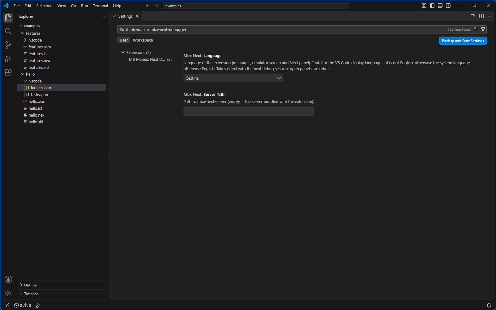
mbxNext: jazyk rozšíření a cesta
k ladicímu serveru.Změna platí pro příští ladicí sezení; panely, které jsou právě otevřené (obrazovka emulátoru, panel Next), se hned přestaví v novém jazyce. Názvy příkazů a popisy v nastavení a v launch.json se řídí jazykem VS Code, ne tímto nastavením.
Orientace ve VS Code
Tato kapitola je pro ty, kdo s VS Code začínají. Popisuje části okna, se kterými se při ladění setkáte, a kde je najdete. Na obrázku je okno při ladění ukázkového programu.
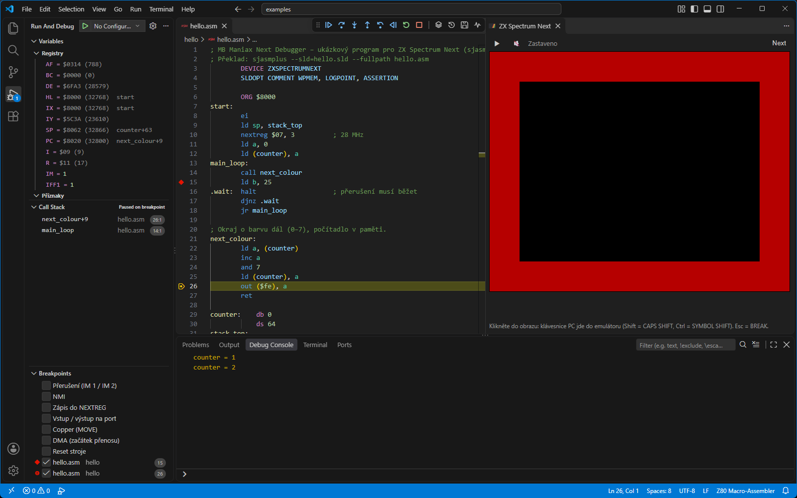
- Activity Bar – úzký svislý pruh ikon úplně vlevo. Přepíná, co je v postranním panelu: soubory (Explorer, Ctrl+Shift+E), hledání, rozšíření a hlavně Run and Debug (ikona trojúhelníku „play“ s broukem, Ctrl+Shift+D).
- Postranní panel Run and Debug – vlevo vedle Activity Bar. Nahoře zelené tlačítko ▶ se jménem ladicí konfigurace (spustí ladění), pod ním sekce Variables, Watch, Call Stack a Breakpoints. Sekce se rozbalují a sbalují kliknutím na jejich záhlaví.
- Lišta ladění (Debug Toolbar) – plovoucí řada tlačítek nahoře uprostřed okna; objeví se, jen když ladění běží.
- Editor – uprostřed. Vlevo od čísel řádků je úzký okraj (gutter), kam se klikem dávají breakpointy. Řádek, na kterém program stojí, je zvýrazněný žlutě se žlutou šipkou v okraji.
- Panel ZX Spectrum Next – obrazovka emulátoru; při startu ladění se otevře vpravo vedle editoru ().
- Spodní panel (Panel) – záložky Problems, Output, Debug Console, Terminal. Zobrazí a skryje se zkratkou Ctrl+J.
- Stavový řádek (Status Bar) – úplně dole. Během ladění změní barvu (obvykle na oranžovou). Vpravo dole je mimo jiné jazyk otevřeného souboru (například Plain Text) – na ten se ještě odvoláme v kapitole .
Run and Debug
Ladění spustíte klávesou F5, nebo zeleným tlačítkem ▶ nahoře v postranním panelu
Run and Debug (Ctrl+Shift+D). Vedle tlačítka je
rozbalovací seznam ladicích konfigurací ze souboru .vscode/launch.json – pokud jich máte
víc, tady vyberete, kterou spustit. Když složka žádný launch.json nemá, je v panelu odkaz
create a launch.json file ().
Lišta ladění
Když ladění běží, objeví se nahoře uprostřed okna plovoucí lišta. Dá se uchopit za levý okraj a přesunout. Tlačítka zleva:
Za nimi jsou tlačítka tohoto rozšíření (ikony; název ukáže bublina po najetí myší): Next Panel (Sprites, Palettes, …) – otevře panel Next, Save State… a Restore State… – uložené stavy, Start Profiler / Stop Profiler – profiler. Pokud se všechna tlačítka na lištu nevejdou, část z nich VS Code schová pod šipku nebo tři tečky na konci lišty.
Variables – registry a stav stroje
Sekce Variables v postranním panelu Run and Debug ukazuje stav stroje vždy, když program stojí. Má čtyři skupiny:
- Registry –
AF BC DE HL IX IY SP PCšestnáctkově i desítkově ($8000 (32768)), za nimi návěští, na které hodnota ukazuje (start,main_loop+3); dáleI,R, režim přerušeníIMaIFF1. - Příznaky –
S Z H P/V N Cjako 0 nebo 1. - Stínové registry –
AF' BC' DE' HL'(ve výchozím stavu sbalené). - Stroj (MMU, čas) – Snímek (číslo snímku od startu), T-stavy celkem
a osm slotů MMU:
MMU0 ($0000)…MMU7 ($E000)s číslem 8K stránky, která je ve slotu namapovaná (stránka 10 ($0A)).
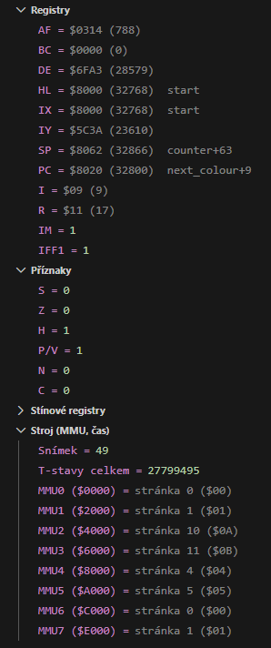
Hodnoty registrů a příznaků se dají měnit ().
Watch
Sekce Watch drží výrazy, které chcete sledovat – například
mem[counter] nebo HL. Přidáte je tlačítkem + v záhlaví sekce
(objeví se po najetí myší na záhlaví), nebo v editoru označte text, klikněte pravým tlačítkem a
vyberte Add to Watch. Hodnoty se přepočítají při každém zastavení.
Podrobnosti v .
Call Stack
Sekce Call Stack ukazuje, kde program stojí a kudy se tam dostal: nahoře aktuální místo (jméno nejbližšího návěští), pod ním místa, odkud byly volány podprogramy. Kliknutím na řádek se editor přesune na příslušné místo ve zdrojáku. Místa mimo váš zdroják (ROM, kód bez ladicích informací) jsou šedá a mají u sebe adresu. V záhlaví sekce je i důvod zastavení – například Paused on breakpoint, Paused on step, Paused on BREAK nebo název události.
Breakpoints
Sekce Breakpoints vypisuje všechny breakpointy a logpointy; zaškrtávátkem je dočasně vypnete, dvojklikem přejdete na řádek. Nahoře v seznamu jsou zaškrtávátka událostí stroje tohoto rozšíření (Přerušení (IM 1 / IM 2), NMI, Zápis do NEXTREG …), viz . V záhlaví sekce jsou tlačítka pro vypnutí a smazání všech breakpointů.
Debug Console
Debug Console je záložka ve spodním panelu. Otevře se zkratkou
Ctrl+Shift+Y, menu View › Debug Console,
nebo kliknutím na záložku Debug Console ve spodním panelu
(Ctrl+J ho zobrazí). Sem přichází výpis logpointů, hlášení rozšíření
a výpisy emulátoru. Úplně dole je vstupní řádek se znakem >: napište výraz
(například HL) a stiskněte Enter – vypíše se jeho hodnota. Příkazem
m adresa vypíšete paměť (). Šipkami
↑ ↓ listujete v dříve zadaných příkazech.
Command Palette
Paleta příkazů (Command Palette) je místo, odkud se dá spustit kterýkoli
příkaz VS Code i rozšíření. Otevřete ji zkratkou Ctrl+Shift+P nebo
F1, případně menu View › Command Palette…. Nahoře uprostřed
okna se objeví vstupní pole; pište část názvu příkazu (například mb maniax) a šipkami
vyberte. Příkazy tohoto rozšíření začínají MB Maniax: (a obrazovka emulátoru
MB Maniax Next:). Některé z nich se v nabídce objeví, jen když ladění
běží.
Terminál a Problems
Terminal (Ctrl+`, klávesa pod Esc) je příkazový řádek ve spodním panelu – sem píše sjasmplus při překladu. Chyby překladu se navíc objeví v záložce Problems (Ctrl+Shift+M); kliknutím na chybu přejdete na řádek ve zdrojáku.
První program
V této kapitole přeložíte a spustíte ukázkový program hello ze složky
examples/hello. Program mění barvu okraje a počítá v paměti, kolikrát to udělal.
Celý postup je stejný jako u vašeho vlastního projektu.
; examples/hello/hello.asm (zkráceno)
DEVICE ZXSPECTRUMNEXT
SLDOPT COMMENT WPMEM, LOGPOINT, ASSERTION
ORG $8000
start: ei
ld sp, stack_top
nextreg $07, 3 ; 28 MHz
ld a, 0
ld (counter), a
main_loop:
call next_colour
ld b, 25
.wait: halt
djnz .wait
jr main_loop
next_colour:
ld a, (counter)
inc a
and 7
ld (counter), a
out ($fe), a
ret
counter: db 0
ds 64
stack_top:
SAVENEX OPEN "hello.nex", start, stack_top
SAVENEX CORE 3, 0, 0
SAVENEX AUTO
SAVENEX CLOSEPřeklad se ladicími informacemi
Aby ladicí nástroj věděl, který řádek zdrojáku odpovídá které adrese, potřebuje od sjasmplus
soubor SLD (Source Level Debugging). sjasmplus ho vytvoří s volbou --sld:
sjasmplus --sld=hello.sld --fullpath hello.asm--sld=hello.sld– zapíše ladicí informace (řádky, adresy, 8K stránky, návěští, klíčová slova z komentářů).--fullpath– zapíše do SLD celé cesty ke zdrojákům, aby rozšíření spolehlivě spárovalo řádky se soubory otevřenými v editoru (i když se zdroják skládá z víc souborů přesINCLUDE).
Výsledný program (hello.nex) vytvoří direktiva SAVENEX ve zdrojáku.
Zkontrolujte, že sjasmplus jde spustit: otevřete terminál
(Ctrl+`) a napište sjasmplus --version. Pokud Windows příkaz
nezná, přidejte složku se sjasmplus do proměnné PATH (a VS Code pak zavřete a znovu
spusťte), nebo v tasks.json napište celou cestu k sjasmplus.exe.
Otevření složky
VS Code pracuje se složkami (workspace), ne s jednotlivými soubory – nastavení ladění
a úloh se hledá v podsložce .vscode otevřené složky.
- Menu File › Open Folder… (Ctrl+K
Ctrl+O) a vyberte složku
examples\hello. - Pokud se VS Code zeptá, zda autorům složky důvěřujete (Do you trust the authors…), potvrďte Yes, I trust the authors – jinak by nesměl spouštět úlohy (překlad).
- Vlevo v Explorer (Ctrl+Shift+E) klikněte
na
hello.asm; otevře se v editoru.
Soubor launch.json – jak ladit
Soubor .vscode/launch.json říká, co se má při F5 spustit. Ukázka ho už má:
{
"version": "0.2.0",
"configurations": [
{
"type": "mbx-next",
"request": "launch",
"name": "Ladit hello.nex",
"program": "${workspaceFolder}/hello.nex",
"sld": "${workspaceFolder}/hello.sld",
"stopOnEntry": true,
"preLaunchTask": "sjasmplus"
}
]
}"type": "mbx-next"– ladí se tímto rozšířením."name"– jméno, které uvidíte v seznamu vedle zeleného tlačítka ▶."program"a"sld"– přeložený program a jeho ladicí informace;${workspaceFolder}je otevřená složka."stopOnEntry": true– zastavit hned na první instrukci programu."preLaunchTask": "sjasmplus"– před spuštěním přeložit program úlohousjasmplusz tasks.json (další oddíl).
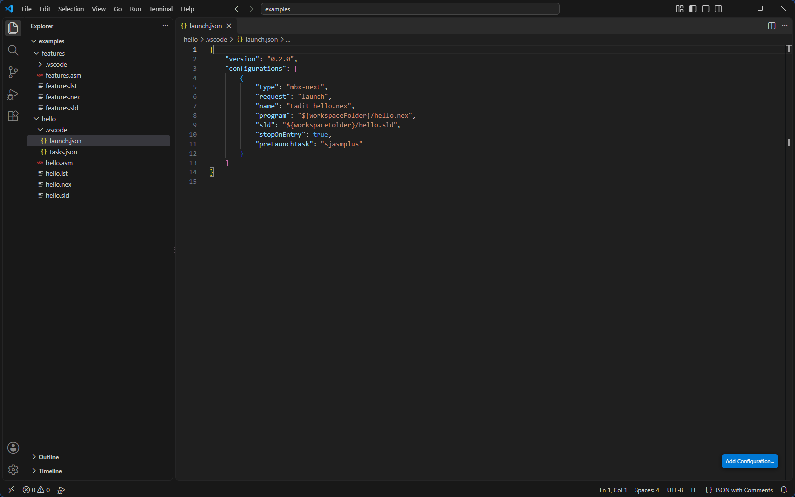
Ve vlastním projektu launch.json vytvoříte takto: v panelu Run and Debug
klikněte na create a launch.json file a vyberte MB Maniax Next
Debugger. Vznikne konfigurace „Ladit na ZX Spectrum Next“ s program.nex
a program.sld – přepište jména na svá. Do existujícího launch.json přidáte další
konfiguraci tlačítkem Add Configuration… vpravo dole v editoru launch.json
a volbou MB Maniax Next Debugger: Next program (sjasmplus)
(v českém VS Code program pro Next (sjasmplus)). Všechny atributy popisuje
.
Soubor tasks.json – jak překládat
Úloha (task) je příkaz, který VS Code spustí za vás – tady překlad sjasmplus. Soubor
.vscode/tasks.json z ukázky:
{
"version": "2.0.0",
"tasks": [
{
"label": "sjasmplus",
"type": "shell",
"command": "sjasmplus",
"args": ["--sld=hello.sld", "--fullpath", "--lst=hello.lst", "hello.asm"],
"options": { "cwd": "${workspaceFolder}" },
"group": { "kind": "build", "isDefault": true },
"problemMatcher": {
"owner": "sjasmplus",
"fileLocation": ["autoDetect", "${workspaceFolder}"],
"pattern": {
"regexp": "^(.*)\\((\\d+)\\):\\s+(error|warning)[^:]*:\\s+(.*)$",
"file": 1, "line": 2, "severity": 3, "message": 4
}
}
}
]
}"label"– jméno úlohy; na něj odkazujepreLaunchTaskv launch.json."args"– parametry sjasmplus (--lstnavíc vytvoří výpis)."group": … "isDefault": true– výchozí úloha překladu: spustíte ji kdykoli zkratkou Ctrl+Shift+B, i bez ladění."problemMatcher"– chyby a varování sjasmplus se ukážou v záložce Problems a jako podtržení ve zdrojáku.
Spuštění: F5
- Stiskněte F5. Ve spodním panelu se otevře Terminal a proběhne překlad. (Pokud překlad selže, VS Code nabídne Debug Anyway nebo Show Errors – podívejte se do Problems.)
- Spustí se emulátor a vpravo vedle editoru se otevře panel ZX Spectrum Next s obrazovkou.
- Protože ukázka má
"stopOnEntry": true, program hned stojí na první instrukci (eiza návěštímstart) – řádek je žlutý a vlevo se plní sekce Variables a Call Stack. - Klikněte do okraje vlevo od čísla řádku
call next_colour– objeví se červená tečka, breakpoint. - Stiskněte F5 (Continue). Program se rozběhne a zastaví na breakpointu.
- Stiskněte F11 (Step Into) – jste uvnitř
next_colour. Krokujte dál F11 a sledujte v sekci Variables, jak se měníA; po instrukciout ($fe), ase změní barva okraje na obrazovce emulátoru. - Najeďte myší na slovo
counterve zdrojáku – bublina ukáže jeho adresu a obsah paměti. Do Debug Console (Ctrl+Shift+Y) napištem countera stiskněte Enter. - Ladění ukončíte Shift+F5 nebo tlačítkem Stop na liště ladění.
Bez launch.json
Pro rychlé vyzkoušení launch.json není nutný: otevřete v editoru soubor .asm (také
.a80, .z80 nebo .s) a stiskněte F5. Rozšíření spustí
.nex a .sld stejného jména ze stejné složky (k hra.asm
tedy hra.nex a hra.sld). Program ale v tomto režimu nepřekládá –
přeložte ho předem (Ctrl+Shift+B nebo v terminálu). Pokud se VS Code
zeptá, jaký ladicí nástroj použít (Select debugger), vyberte
MB Maniax Next Debugger.
Data programu a esxDOS. Bez obrazu SD karty program přes esxDOS vidí
složku, ve které leží (načítání dat, uložené pozice). Jinou složku nebo obraz SD karty nastavíte
v launch.json atributy esxdosRoot a sdImage.
Program ve složce může soubory číst a zapisovat, mazat (i podle masky, např. *.TMP),
přejmenovávat a zkracovat, zakládat a mazat podsložky a nastavovat atribut „jen pro čtení“.
Odpovědi a chybové kódy odpovídají NextZXOS. Změny se zapíší na disk hned a krok zpět
() je nevrátí.
Ladění
Breakpointy
Breakpoint zastaví program těsně před provedením instrukce na daném řádku.
- Myší: najeďte v editoru do úzkého okraje vlevo od čísel řádků – objeví se bledě červená tečka. Kliknutím ji „přišpendlíte“, dalším kliknutím breakpoint zrušíte.
- Klávesou: postavte kurzor na řádek a stiskněte F9 (zapnout / vypnout).
- Kontextovou nabídkou: pravé tlačítko v okraji vlevo nabízí Add Breakpoint, Add Conditional Breakpoint… a Add Logpoint…; pravé tlačítko na existující tečce nabízí Edit Breakpoint…, Disable Breakpoint a Remove Breakpoint.
Breakpointy můžete dávat i před spuštěním ladění; při startu se pošlou emulátoru. Pokud na řádku není instrukce (komentář, prázdný řádek, samotné návěští), posune se breakpoint na nejbližší další řádek s instrukcí (nejvýš o 20 řádků). Když instrukce ani tam není, zůstane tečka šedá a prázdná (neověřený breakpoint) a bublina u ní řekne proč – například Na řádku ani pod ním není instrukce (podle SLD) nebo Chybí SLD ze sjasmplus (atribut "sld").
Stránkovaná paměť. SLD ze sjasmplus zná u každého řádku i 8K stránku
(pokud zdroják používá DEVICE ZXSPECTRUMNEXT). Breakpoint pak zastaví jen tehdy, když
je ta stránka v příslušném slotu MMU opravdu namapovaná – kód jiné stránky na stejné adrese ho
nespustí. Když je tentýž řádek přeložený do víc stránek, platí breakpoint pro všechny.
Když v okraji tečka vůbec nejde dát (po najetí myší se neobjeví), VS Code nepovažuje soubor za jazyk, pro který rozšíření breakpointy hlásí. Řešení najdete v kapitole .
Krokování
Když program stojí, ovládáte ho tlačítky na liště ladění nebo klávesami:
| Klávesa | Akce | Popis |
|---|---|---|
| F5 | Continue | Běh až do dalšího breakpointu, události nebo pauzy. |
| F6 | Pause | Zastaví běžící program na nejbližší hranici instrukce. |
| F11 | Step Into | Jedna instrukce. U HALT počká, než ho přerušení ukončí. |
| F10 | Step Over | Jako Step Into, ale CALL, RST a DJNZ proběhnou celé a stroj zastaví na následující instrukci. |
| Shift+F11 | Step Out | Běh, dokud se program nevrátí z aktuálního podprogramu (o úroveň výš v zásobníku). |
Pozastavit a rozběhnout program jde také tlačítkem ⏸ / ▶ v panelu s obrazovkou emulátoru.
Run to Cursor a Jump to Cursor
Když stroj stojí, klikněte pravým tlačítkem na řádek zdrojáku:
- Run to Cursor – program poběží, dokud na tento řádek nedojde (jako jednorázový breakpoint).
- Jump to Cursor – přesune
PCna tento řádek bez provedení kódu mezi. Hodí se k přeskočení kusu kódu nebo k opakování instrukce. Pokud je řádek přeložený na víc adres (víc stránek), VS Code nabídne výběr – položky mají tvar$C000 (stránka 12)a stránky, které právě nejsou namapované, mají poznámku není namapovaná.
Podmíněné breakpointy
Podmíněný breakpoint zastaví, jen když platí podmínka. Podmínku vyhodnocuje přímo emulátor při každém průchodu, takže program nezpomaluje – nemusíte se bát dát ji do smyčky, která běží tisíckrát za snímek.
- Pravým tlačítkem klikněte do okraje vlevo od řádku a vyberte Add Conditional Breakpoint… (u existujícího breakpointu Edit Breakpoint…).
- Pod řádkem se otevře malé pole. Vlevo v něm je rozbalovací nabídka: nechte Expression.
- Napište podmínku a stiskněte Enter. Tečka breakpointu dostane symbol
=.
Příklady podmínek:
A == 5
HL > $4000 and not ZF
mem[counter] == 3
mem16[score] >= 1000
nextreg[$50] == 10
FRAME > 100
B == 0 or (IX >= enemies and IX < enemies_end)Návěští ze zdrojáku (counter, score) se píšou přímo. Úplný jazyk výrazů
popisuje kapitola . Chybu v podmínce (překlep, neznámé jméno)
pozná emulátor hned: breakpoint zůstane šedý a bublina u něj ukáže chybu. Chyba za běhu (např. dělení
nulou) se vypíše do Debug Console.
Počty průchodů
V poli pro úpravu breakpointu vyberte v rozbalovací nabídce Hit Count a zadejte, kolikátý průchod má zastavit:
| Zápis | Zastaví |
|---|---|
3 nebo == 3 | právě při 3. průchodu |
>= 10 | při 10. průchodu a každém dalším |
> 10, < 5, <= 5 | obdobně |
% 4 | při každém 4. průchodu (4., 8., 12. …) |
Podmínku a počet průchodů můžete kombinovat – průchody se pak počítají jen tehdy, když podmínka platí. Počítadlo začíná od nuly při každé změně breakpointů.
Logpointy
Logpoint program nezastaví, jen vypíše text do Debug Console – je to ladicí výpis, který nemusíte psát do programu. Pravým tlačítkem v okraji vyberte Add Logpoint… (nebo v poli úpravy breakpointu Log Message) a napište zprávu. Výrazy ve složených závorkách se nahradí hodnotou:
barva {A}, skóre {mem16[score]}
HL={HL:hex} DE={DE:hex} příznaky {F:flags}Za dvojtečkou může být formát: hex (šestnáctkově), unsigned (výchozí),
signed (se znaménkem), char (znak ASCII), bits (dvojkově),
flags (příznaky ve tvaru SZHPNC, nenastavené jako -),
labels (návěští na adrese). Logpoint má v okraji tvar kosočtverce. Text se vypisuje
při každém průchodu, s počtem průchodů jen při splnění počtu.
Breakpointy na události stroje
Některé chyby nesouvisí s konkrétním řádkem: „kdo mi přepisuje registr $50?“, „kdy přišlo přerušení?“. Pro ně má rozšíření v sekci Breakpoints zaškrtávátka událostí. Zaškrtnutím se událost zapne; po najetí myší na položku se vpravo objeví tužka (Edit Condition), kterou zadáte podmínku – bez podmínky zastaví každá událost daného druhu.
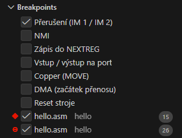
A == 3 a logpoint.| Událost | Kdy zastaví | Co lze použít v podmínce navíc |
|---|---|---|
| Přerušení (IM 1 / IM 2) | na začátku obsluhy maskovatelného přerušení | – (např. IM == 2, FRAME > 50) |
| NMI | nemaskovatelné přerušení (Multiface, DivMMC) | – |
| Zápis do NEXTREG | při zápisu do registru Nextu (instrukcí NEXTREG, přes porty $243B/$253B nebo Copperem) | REG číslo registru, VALUE zapisovaná hodnota, PREV předchozí hodnota, SOURCE kdo zapisuje (CPU, COPPER, DMA) |
| Vstup / výstup na port | při instrukci IN nebo OUT | PORT číslo portu, VALUE hodnota, SOURCE |
| Copper (MOVE) | když Copper provede instrukci MOVE | CPC adresa v programu Copperu (0–1023), CVC řádek, HC_ULA vodorovná pozice |
| DMA (začátek přenosu) | na začátku přenosu DMA | SRC zdrojová adresa, DST cílová adresa |
| Reset stroje | při resetu | (bez podmínky) |
Ve všech podmínkách událostí můžete používat i registry, paměť a ostatní jména z kapitoly
; PC je tu adresa instrukce, která událost
způsobila. Stroj se zastaví hned za touto instrukcí. Příklady: REG == $50 or REG == $51, (PORT & $FF) == $FE,
REG == $15 and SOURCE == CPU. Po zastavení na události je v záhlaví Call Stack její
název.
PORT je celá 16bitová adresa portu, jak ji vidí sběrnice – u
out ($fe),a je horní bajt hodnota A (port $01FE, $02FE …).
Podmínka PORT == $FE by tedy zastavila jen při A = 0. Pro porty, u kterých
rozhoduje jen dolní bajt (ULA $FE, Kempston $1F …), pište
(PORT & $FF) == $FE; plné číslo porovnávejte u 16bitových portů
(PORT == $243B).
Watchpointy – zastavení při přístupu do paměti
Watchpoint (ve VS Code „data breakpoint“) zastaví program, když instrukce čte nebo zapisuje zvolenou paměť. Stroj se zastaví hned po instrukci, která přístup provedla.
- Na registr: v sekci Variables klikněte pravým tlačítkem na
BC,DE,HL,IX,IYneboSPa vyberte Break on Value Change (zápis), Break on Value Read (čtení) nebo Break on Value Access (obojí). Hlídá se bajt, na který registr právě ukazuje – ne registr samotný. - Na návěští nebo adresu: přidejte do sekce Watch výraz, který je
jen jménem návěští (
counter) nebo číslem ($5B00), a na něm pravým tlačítkem zvolte Break on Value Change. - Komentářem ve zdrojáku:
; WPMEM() – hodí se pro oblasti delší než bajt a pro watchpointy, které chcete mít pořád.
Watchpointy najdete v sekci Breakpoints a tam je také vypnete nebo smažete. V novějších verzích VS Code nabízí sekce Breakpoints ve svém záhlaví i příkaz Add Data Breakpoint at Address, kde zadáte adresu a délku přímo.
Výrazy ve Watch a při najetí myší
Do sekce Watch můžete napsat libovolný výraz z kapitoly
: mem[counter], HL,
nextreg[$07], mem16[stack_top - 2], mmu[3]. Výsledek se ukazuje
šestnáctkově i desítkově ($03 (3)). Je-li výraz jen jménem návěští, ukáže se jeho
adresa a k ní obsah paměti na ní: $8023 (32803) → [$03] [$0003] – v hranatých závorkách
bajt a 16bitové slovo.
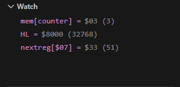
mem[counter], HL a
nextreg[$07].Když program stojí, stačí v editoru najet myší na registr nebo návěští – bublina ukáže hodnotu a obsah paměti, na kterou ukazuje. Bublina se ukáže jen u slov, která jsou platným výrazem.
Debug Console a výpis paměti
Do vstupního řádku Debug Console (Ctrl+Shift+Y, řádek s
> úplně dole) napište výraz a stiskněte Enter; vypíše se jeho hodnota
stejně jako ve Watch. Navíc tu funguje příkaz pro výpis paměti:
m adresa
m adresa, délkaAdresa i délka jsou výrazy (číslo, návěští, registr…). Bez délky se vypíše 128 bajtů, nejvýš jde
4096. Každý řádek má adresu, 16 bajtů šestnáctkově, tytéž bajty jako text (netisknutelné jako
.) a návěští, které na adrese začíná nebo jí předchází:
> m start, 32
$8000 FB 31 64 80 ED 91 07 03 3E 00 32 23 80 CD 17 80 .1d.....>.2#.... start
$8010 06 19 76 10 FD 18 F6 3A 23 80 3C E6 07 32 23 80 ..v....:#.<..2#. main_loop+3
> m HL, 16
> m stack_top - 16, 16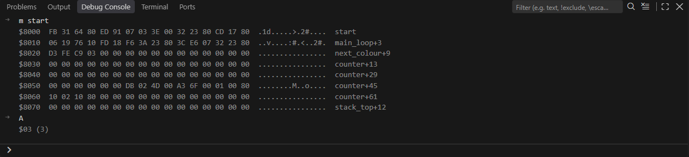
m start a hodnota výrazu
A.Prohlížení a úprava paměti
U 16bitových registrů v sekci Variables se po najetí myší objeví vpravo malá ikona View Binary Data. Otevře paměť od adresy v registru v šestnáctkovém editoru VS Code (rozšíření Hex Editor od Microsoftu – pokud ho nemáte, VS Code nabídne jeho instalaci). V hex editoru lze bajty i přepsat; zápis jde rovnou do paměti emulátoru. Zobrazuje se paměť tak, jak ji vidí procesor (64 KB podle aktuálního mapování MMU).
Disassembler
Když program stojí mimo váš zdroják (v ROM, v kódu bez SLD, v datech), nebo když chcete vidět skutečné instrukce, otevřete disassembler: pravým tlačítkem v editoru zvolte Open Disassembly View, nebo v paletě příkazů Debug: Open Disassembly View. Instrukce mají u sebe návěští ze SLD a řádky zdrojáku. I v disassembleru lze klikem vlevo od adresy dát breakpoint a krokovat po instrukcích. Bez souboru SLD se ladí jen tady.
Úprava registrů a příznaků
V sekci Variables dvakrát klikněte na hodnotu registru (nebo pravým
tlačítkem Set Value), napište novou hodnotu a stiskněte Enter.
Čísla lze psát jako $FF, 0xFF, #FF, FFh,
255 nebo dvojkově %1010. Příznaky (S Z H P/V N C) mají hodnotu
0 nebo 1. Chcete-li přesunout PC na jiný řádek, je pohodlnější Jump to Cursor
() – editor se přesune s ním.
Jazyk výrazů
Stejný jazyk výrazů platí všude: v podmínkách breakpointů a watchpointů, v podmínkách událostí, v logpointech (ve složených závorkách), v sekci Watch, při najetí myší, v Debug Console a v klíčových slovech v komentářích (). Výrazy počítá emulátor v 32bitových celých číslech se znaménkem. Podmínka platí, když je výsledek nenulový.
Čísla
| Zápis | Význam |
|---|---|
255 | desítkově |
$FF, 0xFF | šestnáctkově |
0b1010 | dvojkově |
true, false | 1 a 0 |
V podmínkách v okně VS Code nefungují zápisy #FF,
0FFh a %1010 (% je zbytek po dělení). Ty jdou jen v komentářích
WPMEM / LOGPOINT / ASSERTION a při úpravě hodnoty registru.
Registry a příznaky
| Jméno | Význam |
|---|---|
A F B C D E H L I R | 8bitové registry |
AF BC DE HL IX IY SP PC | 16bitové registry |
AF' BC' DE' HL' | stínové registry (lze psát i AF2 BC2 DE2 HL2) |
IXH IXL IYH IYL | horní a dolní polovina IX a IY |
CF ZF SF PF HF NF | příznaky carry, zero, sign, parity/overflow, half-carry, subtract (0/1) |
IFF1 IFF2 IM HALTED | klopné obvody přerušení, režim přerušení, procesor stojí na HALT |
Jména registrů z prvních čtyř řádků (včetně AF' a IXH) a IM,
IFF1, IFF2 můžete psát i malými písmeny (rozšíření je převede); ostatní jména
(AF2, příznaky, HALTED, jména z dalších tabulek) pište velkými písmeny,
jak jsou v tabulce.
Paměť, registry Nextu a MMU
| Zápis | Hodnota |
|---|---|
mem[a] | bajt na adrese a (paměť procesoru 0–$FFFF podle aktuálního mapování) |
mem16[a] | 16bitové slovo na adrese a (little endian) |
stack[n] | slovo na zásobníku: stack[0] = na SP, stack[1] = na SP+2 … |
phys[stránka, posun] | bajt ve fyzické 8K stránce (posun 0–$1FFF), bez ohledu na mapování |
nextreg[r] | hodnota registru Nextu r (0–255) |
mmu[s] | 8K stránka nastavená ve slotu s (0–7) registry MMU |
page[s] | 8K stránka, kterou slot s skutečně používá |
Čtení ve výrazech nemá vedlejší účinky: nespustí watchpoint ani nezmění stav registrů, které se čtením mění.
Čas a rastr
| Jméno | Hodnota |
|---|---|
FRAME | číslo snímku od startu |
CYCLE | čas od startu v cyklech hlavních hodin 28 MHz |
TFRAME | čas od začátku snímku v cyklech 28 MHz |
VC_ULA | řádek obrazu (0 = první řádek papíru, 0–191 papír) |
PHC | sloupec pixelu (0 = první pixel papíru) |
CVC | řádek tak, jak ho porovnává Copper a řádkové přerušení (NR $1E/$1F); = VC_ULA + NR $64 |
HC_ULA | vodorovný čítač 7 MHz, se kterým pracuje Copper |
RAW_HC, RAW_VC | syrové čítače rastru |
MACHINE | typ stroje: 0 = 48K, 1 = 128K, 2 = +3, 3 = Pentagon, 4 = Next |
Návěští
Globální návěští ze zdrojáku (podle SLD) se píšou přímo a mají hodnotu své adresy:
mem[counter], HL == next_colour, mem16[score] > 100. Velikost
písmen musí odpovídat zdrojáku. Pokud by se návěští jmenovalo stejně jako registr, vyhrává registr;
návěští si pak vynutíte zavináčem: @c. Fungují i lokální návěští s tečkou v plném
tvaru: main_loop.wait má hodnotu adresy lokálního návěští .wait uvnitř
main_loop.
Operátory
Seřazené od nejnižší priority po nejvyšší (operátory na jednom řádku mají stejnou prioritu):
| Operátory | Význam |
|---|---|
or | logické NEBO (vyhodnocuje se zkráceně) |
and | logické A (zkráceně) |
not | logická negace |
== != < > <= >= | porovnání (výsledek 1 nebo 0, se znaménkem) |
| ^ | bitové NEBO, XOR |
& | bitové A |
<< >> | posuny |
+ - | sčítání, odčítání |
* / % | násobení, celočíselné dělení, zbytek |
-x ~x | unární minus, bitová negace |
Pozor na rozdíl od jazyka C: bitové operátory mají vyšší prioritu než porovnání, takže
A & $80 == $80 znamená (A & $80) == $80. Závorky ale nikdy neuškodí.
Místo &&, || a ! pište and, or
a not.
Jména pro události a watchpointy
V podmínkách událostí () jsou navíc k dispozici údaje
o události: REG, VALUE, PREV, PORT,
SOURCE (s konstantami CPU, COPPER, DMA),
CPC, SRC, DST – které z nich jdou u které události, ukazuje tabulka
v oddílu o událostech. V podmínce watchpointu (čtvrtý parametr WPMEM) jsou ADDR
(adresa přístupu) a VALUE (přenášený bajt). Jméno, které daná událost nenese, emulátor
odmítne už při zadání.
Příklady
| Výraz | Platí, když… |
|---|---|
A == 5 | registr A je 5 |
HL >= $4000 and HL < $5800 | HL ukazuje do obrazovky ULA |
not ZF | příznak Z je nulový |
mem[counter] == 3 | bajt na návěští counter je 3 |
stack[0] == main_loop | na vrcholu zásobníku je návratová adresa main_loop |
nextreg[$07] & 3 == 3 | procesor běží na 28 MHz |
mmu[6] == 20 | ve slotu 6 ($C000) je stránka 20 |
FRAME % 50 == 0 | každý padesátý snímek |
VC_ULA >= 192 | paprsek je pod papírem (spodní okraj) |
Klíčová slova v komentářích sjasmplus
Watchpointy, logpointy a aserce můžete zapsat přímo do zdrojáku jako speciální komentáře (stejná syntaxe jako v DeZogu). Výhoda: jsou součástí kódu, neztratí se, a fungují v každém ladicím sezení bez klikání.
SLDOPT – zapnutí v sjasmplus
sjasmplus zapisuje tyto komentáře do souboru SLD jen tehdy, když je ve zdrojáku (nejlépe na začátku) řádek:
SLDOPT COMMENT WPMEM, LOGPOINT, ASSERTIONStačí uvést ta slova, která používáte. sjasmplus hledá slovo kdekoli v komentáři
a rozlišuje velikost písmen (piště je velkými písmeny); blokové komentáře /* */ do SLD
nezapisuje. Komentář na samostatném řádku platí pro nejbližší následující instrukci, komentář za
instrukcí pro instrukci na tomtéž řádku. U makra se komentář vztahuje k místu, odkud je makro
voláno.
WPMEM – watchpoint
; WPMEM [adresa [, délka [, přístup [, podmínka]]]]- adresa – výraz; bez ní adresa řádku, na kterém komentář je (typicky návěští dat).
- délka – počet hlídaných bajtů, výchozí 1.
- přístup –
rčtení,wzápis,rwobojí (výchozí). - podmínka – nepovinná; zastaví, jen když platí (lze použít
ADDRaVALUE).
score: dw 0 ; WPMEM – hlídá 1 bajt na „score“ (čtení i zápis)
buffer: ds 16 ; WPMEM buffer,16,w – zastaví při zápisu do 16 bajtů
lives: db 3 ; WPMEM lives,1,w,VALUE == 0 – zastaví, když se zapíše nula
; WPMEM $4000, $1800, w – zápis kamkoli do bitmapy ULAPo zastavení je v záhlaví Call Stack důvod WPMEM a v Debug Console řádek s rozsahem adres
a místem komentáře, například WPMEM $8030–$803F (game.asm:120) – WPMEM buffer,16,w.
LOGPOINT – ladicí výpis
; LOGPOINT [SKUPINA] text ${výraz} text ${výraz:formát}Při každém průchodu vypíše text do Debug Console; ${…} nahradí hodnotou výrazu. Formáty
jsou stejné jako u logpointů ve VS Code: hex, unsigned, signed,
char, bits, flags, labels. Nepovinná skupina
v hranatých závorkách hned za slovem se vypíše na začátek řádku ([AI] …). U výpisu
v Debug Console je odkaz na řádek zdrojáku, kliknutím na něj se tam přesunete.
ld a,(hl)
; LOGPOINT [MAP] přečteno ${A:hex} z ${HL:hex}
ld (de),aASSERTION – aserce
; ASSERTION výrazZastaví program, když výraz neplatí (je nula). Prázdná ASSERTION zastaví vždy.
V záhlaví Call Stack je důvod aserce s popisem ASSERTION neplatí: A < 10; stejný
text s místem ve zdrojáku se vypíše do Debug Console.
cp 10 ; ASSERTION A < 10 – zastaví, když výraz neplatí
; ASSERTION SP > stack_bottom and SP <= stack_top
ret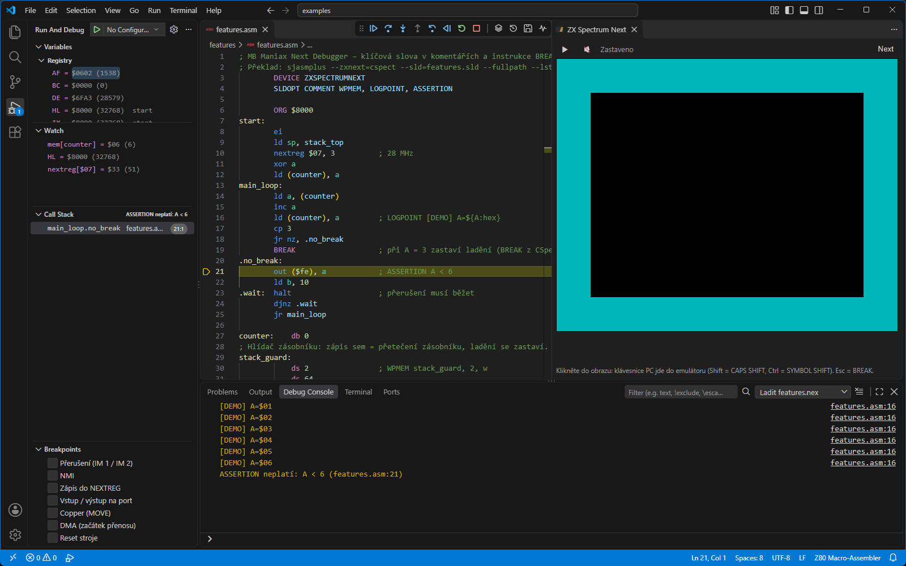
Kdy se klíčová slova vyhodnocují
LOGPOINT a ASSERTION jsou breakpointy na adrese svého řádku – vyhodnocují se před provedením
instrukce na tom řádku. V příkladu ld a,(hl) ; LOGPOINT … ${A} by se tedy vypsalo
A ještě před načtením. Chcete-li vidět výsledek instrukce, dejte komentář na samostatný
řádek pod ni (platí pak pro další instrukci), jako v příkladu výše.
Syntaxe výrazů v komentářích
V komentářích funguje jazyk z kapitoly a navíc zápisy z DeZogu, které rozšíření převede:
| DeZog | Totéž v jazyce výrazů |
|---|---|
b@(x), w@(x) | mem[x], mem16[x] |
&&, ||, ! | and, or, not |
= | == |
#FF, 0FFh | $FF |
%1010 (tam, kde se čeká číslo) | 0b1010 |
Chyby v komentářích (neznámé návěští, špatná délka, neznámý přístup nebo formát) rozšíření ohlásí oznámením vpravo dole ve tvaru WPMEM v komentáři (game.asm:120): …; ostatní klíčová slova fungují dál.
Vypnutí
Každý druh jde vypnout v launch.json, aniž byste měnili zdroják: "wpmem": false,
"logpoints": false, "assertions": false (výchozí hodnota všech je
true).
BREAK z CSpectu
Instrukce BREAK z emulátoru CSpect zastaví program jako breakpoint – hodí se tam,
kde je jednodušší napsat zastavení do kódu než klikat.
- sjasmplus s volbou
--zxnext=cspectpřekládáBREAKjakoFD 00. Funguje i starší CSpectDD 01aED FFze ZEsarUX. - Stroj se zastaví hned za instrukcí (PC = adresa BREAK + 2): žlutý řádek je na
instrukci za
BREAK, popis v Call Stack uvádí adresu samotného BREAK.
V záhlaví Call Stack je důvod BREAK s popisem Zastaveno na BREAK na $8003.
Pokračujete normálně (F5, kroky). Zastavování vypnete v launch.json:
"magicBreakpoint": false.
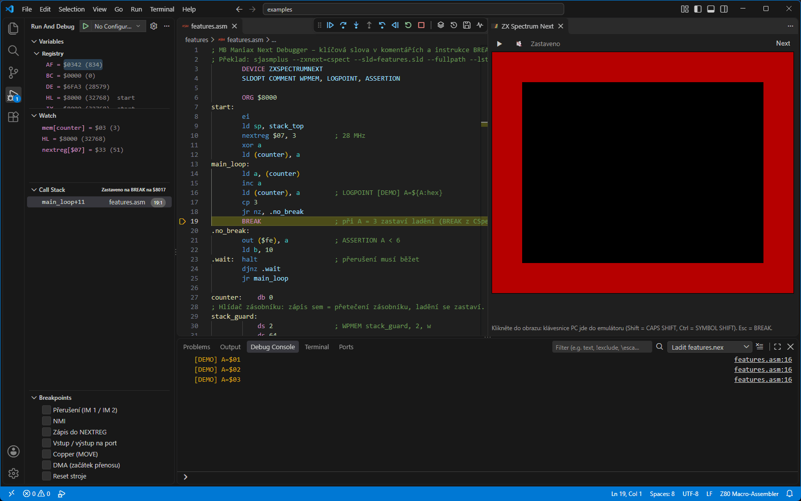
Na skutečném Nextu se FD 00 provede jako NOP, ale
DD 01 jako LD BC,nn a „spolkne“ další dva bajty. DD 01
proto nenechávejte ve výsledném programu. Vypnutý magicBreakpoint se k DD 01
chová stejně jako skutečný Next.
Obrazovka emulátoru
Při startu ladění se vpravo vedle editoru otevře panel ZX Spectrum Next s obrazovkou emulátoru. Pokud ho zavřete, znovu ho otevřete příkazem MB Maniax Next: Show Emulator Screen (Zobrazit obrazovku emulátoru) z palety příkazů. Panel je běžná záložka editoru – můžete ho přetáhnout za záložku jinam (dolů, do vlastního okna, na druhý monitor pravým tlačítkem na záložce a Move into New Window).
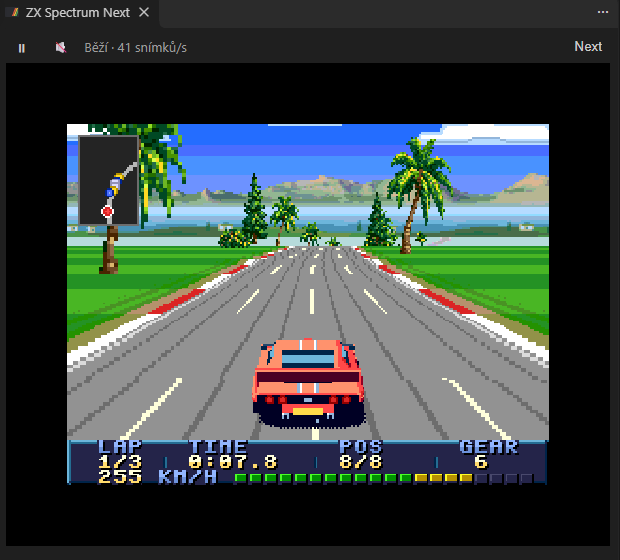
Lišta nahoře v panelu:
- ⏸ / ▶ (Pozastavit / pokračovat) – pozastaví nebo rozběhne program, stejně jako F6 / F5.
- 🔇 / 🔊 (Zvuk) – vypne a zapne zvuk.
- Stav – Čekám na ladění… (žádné ladění neběží), Zastaveno, nebo Běží · 50 snímků/s – skutečná rychlost emulace. Normální je 50 snímků/s; výrazně nižší číslo znamená, že počítač emulaci nestíhá.
- Next – otevře panel Next ().
Klávesnice
Klikněte do obrazu: dokud má obraz fokus, jde klávesnice PC do emulátoru. Shift je CAPS SHIFT, Ctrl je SYMBOL SHIFT a Esc je BREAK. Ostatní klávesy PC (šipky, Backspace …) emulátor převádí podle své mapy kláves. Kliknutím mimo obraz (například do editoru) klávesnice zase patří VS Code a všechny stisknuté klávesy emulátoru se pustí. Tato nápověda je i pod obrazem v panelu.
Klávesové zkratky ladění (F5, F10 …) fungují, jen když má fokus VS Code, ne obraz emulátoru. Když vám F5 „nefunguje“, klikněte nejdřív do editoru.
Zvuk
Prohlížeč uvnitř VS Code smí přehrávat zvuk až po akci uživatele – zvuk se proto zapne, až poprvé kliknete do obrazu (nebo na tlačítko 🔇). Zvuk hraje jen za běhu; v pauze a při krokování je ticho. Pokud je zvuk trhaný, emulace nestíhá – podívejte se na počet snímků za sekundu v liště a do kapitoly .
Pauza, zastavení a obraz
Když program stojí (breakpoint, krok, pauza), obraz ukazuje stav v okamžiku zastavení. Zastaví-li se stroj uprostřed snímku, je horní část obrazu už nová a spodní ještě z předchozího snímku – tak to odpovídá paprsku. Panel Next může do obrazu kreslit zvýraznění vybraného spritu, dlaždice nebo řádku ().
Panel Next
Panel Next ukazuje stav hardwaru Nextu, který v registrech procesoru nevidíte: sprity, vzory, palety, jednotlivé vrstvy obrazu, Layer 2, tilemapu, program Copperu a všechny registry NEXTREG.
Otevření a ovládání
Panel otevřete jedním ze tří způsobů:
- tlačítkem na liště ladění (ikona vrstev, bublina Next Panel (Sprites, Palettes, …)),
- tlačítkem Next v liště panelu s obrazovkou emulátoru,
- příkazem MB Maniax: Next Panel (Sprites, Palettes, …) (Panel Next (sprity, palety, …)) z palety příkazů.
Panel se otevře vedle editoru jako další záložka s názvem Next; jako každou záložku ho můžete přetáhnout jinam.
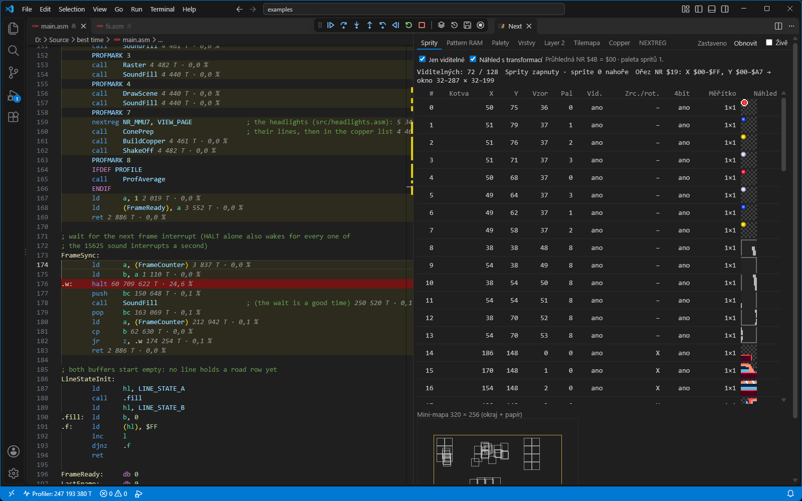
Nahoře v panelu je lišta:
- Záložky – Sprity, Pattern RAM, Palety, Vrstvy, Layer 2, Tilemapa, Copper, NEXTREG. Panel si pamatuje naposledy otevřenou záložku.
- Stav – Čekám na ladění…, Běží nebo Zastaveno.
- Obnovit – načte znovu data zobrazené záložky.
- Živě – obnovuje zobrazenou záložku i za běhu, dvakrát za sekundu.
Bez přepínače Živě se zobrazená záložka obnoví při každém zastavení stroje (breakpoint, krok, pauza) a tlačítkem Obnovit. Obnovuje se vždy jen ta záložka, která je vidět, takže skryté záložky nic nezdržují.
Zvýraznění v obrazovce emulátoru
Některé záložky umí ukázat vybranou věc přímo v obrazovce emulátoru (panel ZX Spectrum Next): na záložce Sprity sprite pod myší nebo vybraný sprite, na záložce Tilemapa dlaždici pod myší, na záložce Copper řádek, na který čeká instrukce WAIT pod myší. Obdélník zvýraznění se kreslí přes obraz; zmizí, když myš z položky odjede nebo když přepnete záložku.
Následující oddíly popisují jednotlivé záložky. Čísla registrů jsou v zápisu NR $xx;
téměř všechny popisky v panelu mají bublinu s vysvětlením (najeďte na ně myší).
Sprity
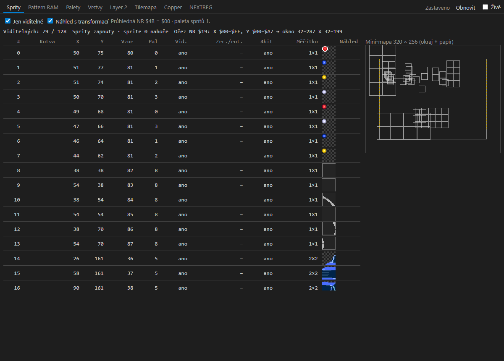
Lišta: Jen viditelné skryje sprity s vypnutým bitem viditelnosti
(zapnuto ve výchozím stavu); Náhled s transformací kreslí náhledy se
zrcadlením a rotací tak, jak vypadají na obrazovce. Vpravo je stav: průhledná barva
(Průhledná NR $4B = $E3) a která paleta spritů se používá.
Souhrnný řádek: počet viditelných spritů (Viditelných: 12 / 128), zda jsou sprity
zapnuté (Sprity vypnuty (NR $15 b0) je zvýrazněné jako varování), zda se kreslí přes okraj
(přes okraj) a zda je sprite 0 nahoře (sprite 0 nahoře), a ořezové okno spritů –
syrové hodnoty NR $19 i výsledné okno v souřadnicích obrazovky.
Tabulka má řádek pro každý sprite:
| Sloupec | Význam |
|---|---|
# | číslo spritu 0–127 |
| Kotva | u relativního spritu rel → #n: číslo kotvy, ke které patří |
| X, Y | poloha v souřadnicích 320 × 256 včetně okraje (X 0 = levý okraj, papír začíná na 32, 32) |
| Vzor | číslo vzoru (patternu), který hardware čte |
| Pal | paletový offset (horní 4 bity indexu barvy) |
| Vid. | bit viditelnosti |
| Zrc./rot. | X, Y = zrcadlení, R = rotace |
| 4bit | 4bitový sprite (128 B na vzor) místo 8bitového (256 B) |
| Měřítko | zvětšení v X × Y (1, 2, 4, 8) |
| Náhled | vzor v barvách aktivní palety; šachovnice = průhledné pixely |
U relativních spritů (kotva + relativní sprity) ukazuje tabulka už výsledné hodnoty – polohu, vzor, paletu a transformace tak, jak je hardware nakreslí. Bublina nad řádkem ukazuje syrové atributy (5 bajtů), adresu vzoru v Pattern RAM a obdélník spritu na obrazovce. Neviditelné sprity jsou šedé.
Mini-mapa vpravo je celá oblast 320 × 256 (okraj + papír): papír 256 × 192 je orámovaný, ořezové okno čárkovaně, každý viditelný sprite obdélníkem. Najetím myší na řádek tabulky nebo na sprite v mini-mapě se sprite zvýrazní v mini-mapě i v obrazovce emulátoru. Kliknutím ho vyberete – zvýraznění pak zůstane, i když myš odjede (dalším kliknutím výběr zrušíte). Kliknutí do mini-mapy vybere vrchní sprite v tom místě a posune tabulku na jeho řádek.
Pattern RAM
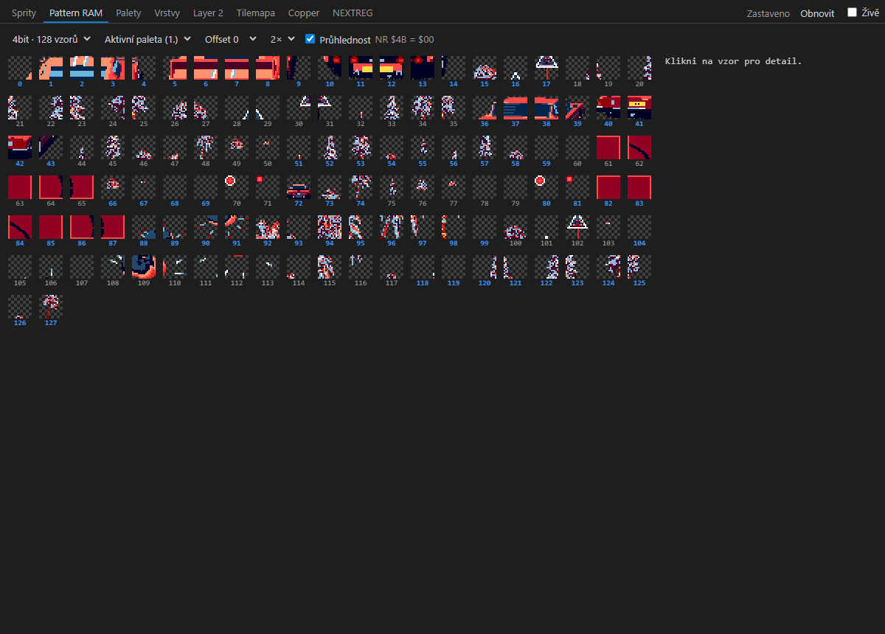
Celá paměť vzorů spritů (16 KB) jako mřížka. Lišta:
- Formát vzorů – 8bit · 64 vzorů nebo 4bit · 128 vzorů.
- Paleta spritů – Aktivní paleta (podle NR $43 bit 3, v závorce která), nebo pevně Sprity 1. / Sprity 2.
- Offset 0–15 – paletový offset pro náhled (u 4bitových vzorů horní nibble indexu, u 8bitových se přičte k hornímu nibblu).
- Zvětšení mřížky a Průhlednost – pixely s hodnotou NR $4B kreslit průhledně (šachovnicí).
Bublina nad vzorem ukazuje jeho číslo a adresu a které sprity ho používají – zvlášť viditelné a neviditelné. Klikněte na vzor: pod mřížkou se ukáže zvětšený detail s adresami, seznamem spritů, které vzor používají, a po najetí myší na pixel jeho souřadnice, hodnota (u 4bitových i který nibble), index v paletě a barva v RGB333 i RGB888.
Palety
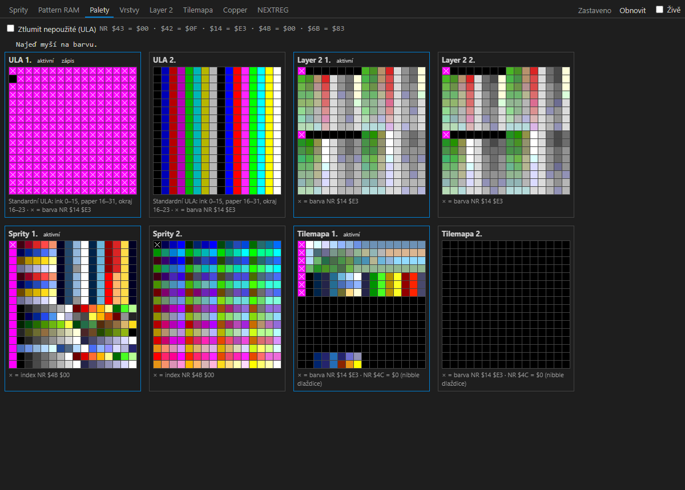
Všech osm palet Nextu, každá jako mřížka 16 × 16: ULA 1. a 2., Layer 2 1. a 2., Sprity 1. a 2., Tilemapa 1. a 2. Index barvy roste po řádcích zleva doprava (první řádek 0–15).
- Štítek aktivní – tuto paletu používá vykreslování.
- Štítek zápis – sem právě míří zápisy přes NR $41/$44 (podle NR $43 bity 6:4).
- Křížek × označuje průhlednou barvu: u ULA, Layer 2 a tilemapy barvu NR $14, u spritů index NR $4B. Legenda pod paletou to vypisuje a u ULA popisuje, které indexy jsou ink, paper a okraj (standardní ULA nebo ULANext s formátem z NR $42).
- Ztlumit nepoužité (ULA) – v paletách ULA ztlumí položky, které aktuální režim nepoužívá.
Řádek vedle přepínače ukazuje registry NR $43 · $42 · $14 · $4B · $6B. Po najetí myší
na barvu se nahoře vypíše: paleta, index (hex i dec), RGB333 a jednotlivé složky R G B (0–7),
8bitová hodnota RRRGGGBB, barva jako #rrggbb a role barvy (ink, paper, okraj, průhledná,
nepoužitá…).
Vrstvy
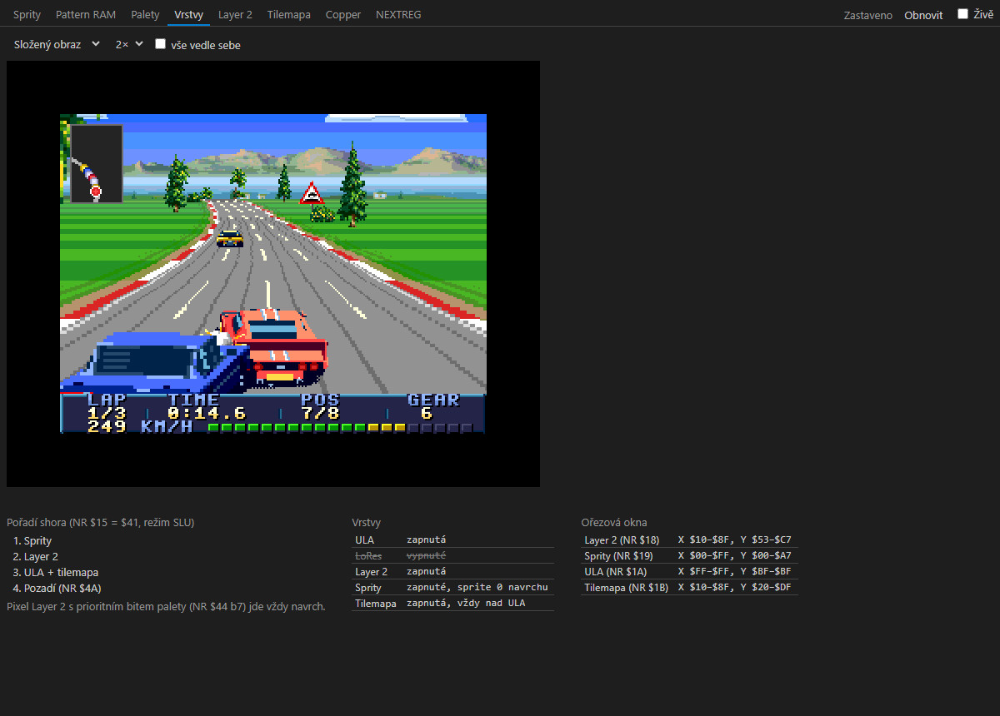
Rozloží obraz na vrstvy, ze kterých ho Next skládá. V nabídce vlevo zvolíte, co vidět: Složený obraz, ULA, ULA stínová, Layer 2, Layer 2 stínová, Sprity, Tilemapa, Pozadí; vedle je zvětšení 1× / 2×. Zaškrtávátko vše vedle sebe ukáže náhledy všech vrstev najednou – kliknutím na náhled se zobrazí ve velkém.
Šachovnice znamená, že vrstva v tom místě nic nekreslí (průhledné). Po najetí myší se pod obrazem
vypíše souřadnice (x, y v prostoru 320 × 256 a sloupec v 640 bodech širokém
obrazu) a barva pixelu (#rrggbb a RGB333). Vrstvy se kreslí pro celý snímek s registry
přehranými po řádcích, takže se projeví i rozdělení obrazu rastrem nebo Copperem.
Pod obrazem jsou tři bloky informací:
- Pořadí shora (NR $15, režim SLU, LSU …) – seznam vrstev od nejvyšší po nejnižší s pozadím (NR $4A) na konci. U režimů míchání barev (L+U sčítání / odečítání) je popsané, jak se ULA a tilemapa míchají s Layer 2. Vypnuté vrstvy jsou přeškrtnuté. Poznámka připomíná, že pixel Layer 2 s prioritním bitem palety (NR $44 b7) jde vždy navrch.
- Vrstvy – zda jsou zapnuté ULA (NR $68 b7), LoRes, Layer 2 (NR $69 b7 / port $123B), sprity (i v okraji, sprite 0 navrchu) a tilemapa (vždy nad ULA, nebo podle atributu).
- Ořezová okna – okna Layer 2, spritů, ULA a tilemapy.
Zastaví-li se stroj uprostřed snímku, řádky pod paprskem jsou nakreslené s aktuálním stavem registrů – na obrazovce emulátoru je tam ještě předchozí snímek, proto se mohou lišit.
Layer 2
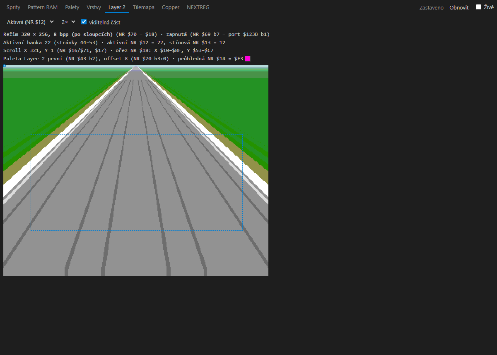
Celý obsah Layer 2 z paměti – nejen to, co je vidět. Přepínač vlevo volí banku: Aktivní (NR $12) nebo Stínová (NR $13); dále zvětšení a viditelná část: čárkovaný obdélník ukazuje, co je po posunu (scroll) a ořezu na obrazovce, kroužek levý horní roh obrazovky.
Informační řádky nahoře: režim (NR $70 – 256 × 192, 8 bpp, 320 × 256, 8 bpp (po sloupcích) nebo 640 × 256, 4 bpp (po sloupcích)) a zda je Layer 2 zapnutá; banka a její stránky; scroll X/Y (NR $16/$71, $17) a ořez NR $18; paleta (první/druhá podle NR $43 b2), offset palety (NR $70 b3:0) a průhledná barva NR $14. Po najetí myší se vypíše banka a posun (i 8K stránka), bajt na tom místě (u 4bpp který nibble), index barvy a případně (průhledná).
Tilemapa
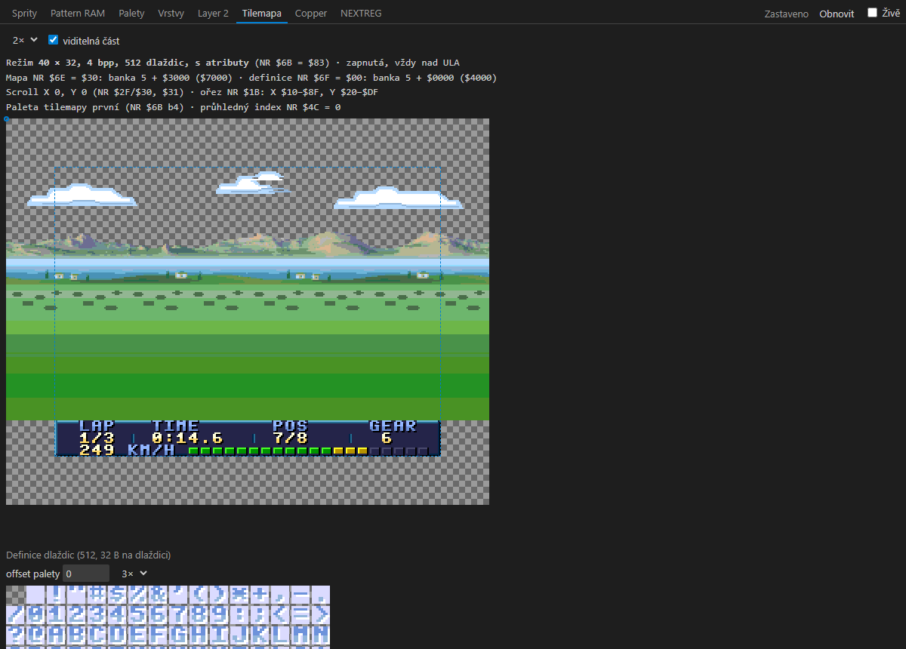
Nahoře celá mapa (40 × 32 nebo 80 × 32 dlaždic) se zvětšením 1× / 2× a volbou viditelná část (čárkovaný výřez po scrollu a ořezu, kroužek = levý horní roh obrazovky). Informační řádky: režim (NR $6B – počet sloupců, 4 bpp nebo textový 1 bpp, 256/512 dlaždic, s atributy nebo bez – pak platí výchozí atribut NR $6C), zda je tilemapa zapnutá a zda je vždy nad ULA; adresy mapy (NR $6E) a definic (NR $6F) v bance 5 nebo 7; scroll (NR $2F/$30, $31) a ořez NR $1B; paleta tilemapy (NR $6B b4) a průhledný index NR $4C (v textovém režimu barva NR $14).
Najeďte myší na dlaždici v mapě: vypíše se její sloupec a řádek, index dlaždice, atribut rozepsaný na paletu, zrcadlení, rotaci a prioritu vůči ULA, a adresa záznamu v mapě i definice. Dlaždice se zároveň orámuje v definicích pod mapou a zvýrazní v obrazovce emulátoru na místě, kde po scrollu leží.
Definice dlaždic pod mapou: všechny definované dlaždice v mřížce po 16; nad nimi offset palety pro náhled (0–15) a zvětšení 2× – 4×. Po najetí myší se ukáže číslo dlaždice a adresa její definice.
Copper
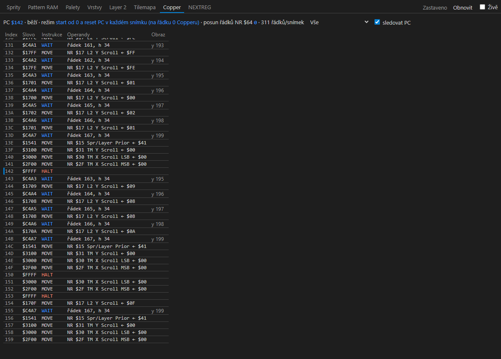
Celý program Copperu (1024 instrukcí). Stavový řádek nahoře: PC $xxx (kde Copper
právě je), běží / stojí, režim (NR $62 bity 7:6: stop, start od 0,
pokračuje od aktuálního PC, start od 0 a reset PC v každém snímku), posun řádků NR $64
a počet řádků snímku. Nabídka Které instrukce zobrazit: Vše, Bez
koncových NOPů, Do prvního HALT; sledovat PC posouvá tabulku tak,
aby byl vidět řádek s PC.
| Sloupec | Význam |
|---|---|
| Index | pozice v programu (0–3FF) |
| Slovo | 16bitová instrukce šestnáctkově |
| Instrukce | MOVE, WAIT, NOP, HALT |
| Operandy | u MOVE NR $40 Palette Index ← $10 (bublina rozepíše bity hodnoty), u WAIT řádek 100, h 0 |
| Obraz | u WAIT řádek obrazovky (y 132 v oblasti 320 × 256 s okrajem), mimo obraz, nebo nikdy, když snímek takový řádek nemá |
Najeďte myší na řádek s WAIT – řádek, na který čeká, se zvýrazní vodorovnou čarou v obrazovce emulátoru. Bublina u WAIT vysvětluje, na jaký řádek a vodorovnou pozici čeká; HALT je WAIT na řádek 511, který nikdy nenastane.
NEXTREG
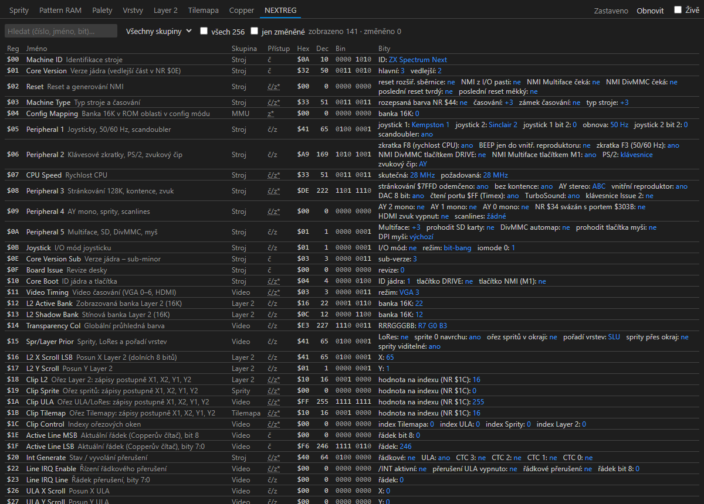
Tabulka registrů Nextu se jménem, skupinou, přístupem, hodnotou šestnáctkově, desítkově a dvojkově a s rozpisem bitů do pojmenovaných polí (například u NR $07 rychlost procesoru, u NR $15 pořadí vrstev). Lišta:
- Hledat (číslo, jméno, bit)… – filtruje podle čísla registru, jména nebo názvu bitového pole.
- Všechny skupiny – omezí tabulku na skupinu: Stroj, Video, Layer 2, Sprity, Tilemapa, Copper, Palety, MMU, Zvuk, Ostatní.
- všech 256 – ukáže i čísla, která Next nedefinuje.
- jen změněné – jen registry změněné od minulého obnovení.
Registry, které se od minulého obnovení změnily, mají podbarvený řádek a změněné bity jsou
zvýrazněné – stačí krokovat a dívat se, co se mění. Počet je vpravo (zobrazeno 84 · změněno 3).
Sloupec Přístup: č/z čtení i zápis, č jen čtení, z jen zápis –
u registrů jen pro zápis je zobrazená hodnota poslední zápis (nebo 0, pokud ji emulátor neuchovává);
hvězdička a bublina upozorňují, když se čtená hodnota liší od zapsané.
Uložené stavy
Uložený stav je snímek celého stroje – paměti, registrů, hardwaru. Hodí se, když se chcete opakovaně vracet do stejného místa hry (před souboj s bossem, před chybou) bez toho, abyste se tam pokaždé „dohrávali“.
Uložení a obnovení
- MB Maniax: Save State… (Uložit stav…) – tlačítko s ikonou diskety na liště ladění nebo příkaz z palety. Nahoře se otevře pole Uložit stav emulátoru; zadejte jméno a stiskněte Enter. Stejné jméno přepíše starší stav (rozšíření se nejdřív zeptá).
- MB Maniax: Restore State… (Obnovit stav…) – tlačítko s ikonou hodin. Ze seznamu vyberte stav; stroj se do něj vrátí a zůstane stát (v Call Stack je důvod obnovení stavu). Pokračujte F5.
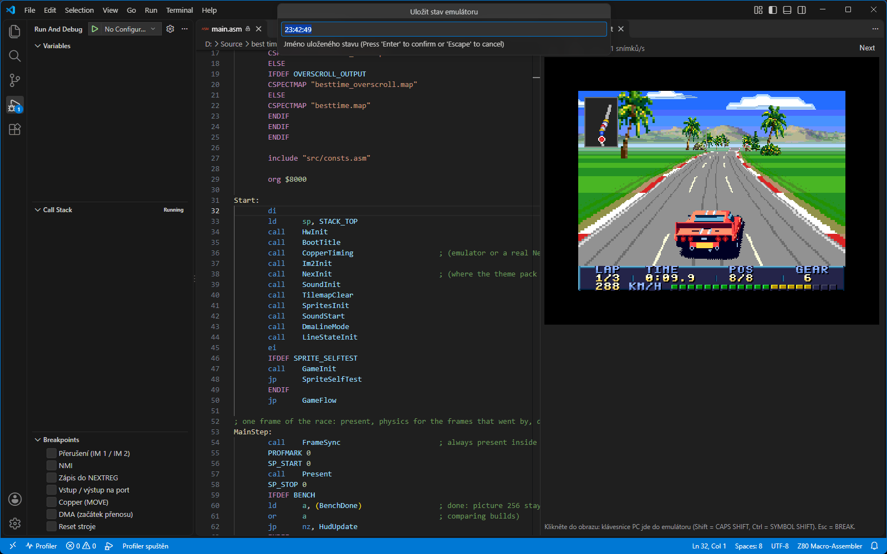
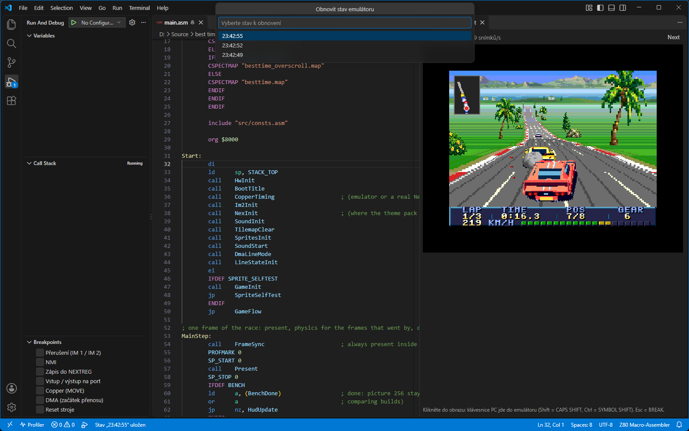
Stavy platí pro aktuální ladicí sezení (do Stop) – přežijí i Restart. V jednom sezení jich může být nejvýš 8. Obnovení nemění breakpointy ani profiler.
Stav se ukládá na konci snímku
Emulátor umí uložit stav jen na hranici snímku. Běžící program je na ní vždy, takže uložení za běhu proběhne hned. Stojí-li stroj uprostřed snímku (breakpoint, krok), rozšíření se zeptá: Stroj stojí uprostřed snímku. Stav lze uložit jen na konci snímku. Doběhnout na konec aktuálního snímku a uložit stav tam? Tlačítkem Doběhnout na konec snímku a uložit program doběhne na konec snímku (breakpointy se při tom ignorují), zastaví se (důvod hranice snímku) a stav se uloží.
Export a import do souboru
MB Maniax: Export State to File… (Exportovat stav do souboru…)
uloží aktuální stav do souboru .mbxstate, MB Maniax: Import State from
File… (Importovat stav ze souboru…) ho načte – i v jiném ladicím sezení. Oba příkazy
jsou jen v paletě příkazů a jen během ladění. Soubor jde načíst jen ve stejné verzi rozšíření
a pro stejný typ stroje; po aktualizaci rozšíření staré soubory nepůjdou načíst.
Profiler
Profiler měří, kde program tráví čas. Sčítá T-stavy (takty procesoru) strávené na každé instrukci a výsledek ukáže přímo ve zdrojáku: u každého řádku, kolik stál, a barvou, jak je drahý vůči ostatním.
Spuštění
- Během ladění klikněte na liště ladění na tlačítko Start Profiler (ikona „tepu“), nebo v paletě příkazů MB Maniax: Start Profiler (Spustit profiler). Vlevo dole ve stavovém řádku se objeví Profiler.
- Nechte program běžet tu část, kterou chcete měřit (například pár sekund hry).
- Zastavte program (F6, breakpoint). Při každém zastavení se výsledek ukáže
v otevřených editorech a ve stavovém řádku přibude součet:
Profiler: 3 512 000 T.
Jak číst výsledky
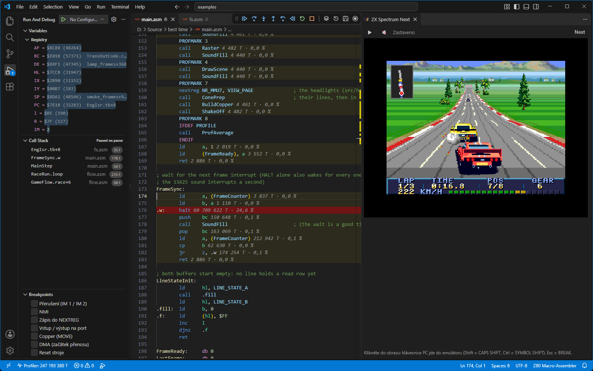
- Šedý text za koncem řádku, např.
1 234 T · 12,3 %: řádek spotřeboval 1 234 T-stavů, což je 12,3 % všech T-stavů za dobu měření (včetně času mimo váš zdroják). Po najetí myší na řádek to bublina zopakuje. - Pozadí řádku od světle žluté po červenou: cena řádku vůči nejdražšímu řádku (8 stupňů). Nejdražší řádky jsou nejvíc červené – na ně se dívejte nejdřív.
- Značky v posuvníku vpravo (přehled souboru): stejné barvy, takže drahá místa najdete i v dlouhém souboru bez listování.
Řádek, který se provádí mnohokrát, je drahý, i když je instrukce sama rychlá – profiler ukazuje
celkový čas, ne čas jednoho průchodu. Započítává se vše, co procesor provede: i čekání v
HALT (každé opakování) a přijetí přerušení (připíše se instrukci, před kterou přišlo).
Nepočítá se doba, kdy procesor stojí kvůli DMA, ani doba pauzy. Instrukce v makru se připíšou řádku,
odkud je makro voláno.
Nejdražší funkce
MB Maniax: Show Profiler Results (Zobrazit výsledky profileru) – z palety příkazů, nebo kliknutím na Profiler ve stavovém řádku – otevře seznam Nejdražší funkce seřazený od nejdražší. Funkce je úsek kódu od globálního návěští po další globální návěští (lokální návěští s tečkou patří ke svému nadřazenému). U každé je součet T-stavů s podílem a soubor s řádkem; výběrem se na ni přesunete. Položka Mimo zdroják (ROM, kód bez SLD) na konci sčítá čas strávený mimo váš zdroják.
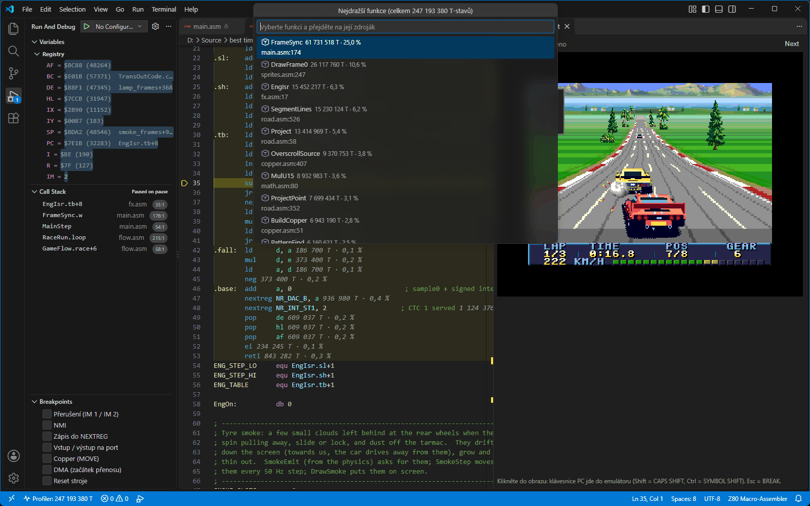
Živé obnovování, zastavení, vynulování
- MB Maniax: Toggle Live Profiler Updates (Přepnout živé obnovování profileru) – výsledky se obnovují i za běhu, každou sekundu. Hodí se, když chcete vidět, jak se čísla mění během hraní.
- MB Maniax: Stop Profiler (Zastavit profiler, tlačítko na liště ladění) – měření skončí, poslední výsledky zůstanou v editoru (i po konci ladění). Objeví se hláška s naměřeným součtem a tlačítkem Zobrazit výsledky; součet zůstane i ve stavovém řádku dole a kliknutím na něj seznam nejdražších funkcí otevřete kdykoli znovu.
- MB Maniax: Clear Profiler Data (Vynulovat profiler) – začne počítat od nuly a obarvení odstraní. Profiler přitom běží dál.
Tipy
- Měřte jen to, co vás zajímá: spusťte program, dojeďte na místo, dejte Clear Profiler Data, nechte běžet a zastavte.
- Hlavní smyčka hry čekající na
HALTukáže velké číslo právě uHALT– to je volný čas snímku, ne chyba. Čím menší podíl má HALT, tím méně rezervy máte. - Restart a nové nahrání programu čítače vynulují; profiler zůstane zapnutý.
- Profiler počítá podle fyzické adresy (stránka + posun), takže kód ve stránkách se nepomíchá, i když běží na stejné adrese.
Krok zpět
Krok zpět (Step Back) vrátí stroj o instrukci zpět – i několikrát po sobě. Emulátor si k tomu pamatuje posledních 10 sekund běhu. Je to užitečné, když se program zastaví na chybě a vy chcete vidět, jak se do ní dostal.
Zapnutí
Krok zpět je ve výchozím stavu vypnutý, protože záznam stopy instrukcí emulaci zpomaluje – u Nextu na 28 MHz asi o čtvrtinu. Zapněte ho v launch.json:
"rewind": truea spusťte ladění znovu. Bez toho tlačítko Step Back ohlásí Krok zpět je vypnutý – zapněte "rewind": true v launch.json (emulace pak běží pomaleji).
Použití
Když program stojí, klikněte na liště ladění na Step Back (šipka s obloukem dozadu). Každé kliknutí vrátí jednu instrukci; registry, paměť i obraz odpovídají stavu před ní. Pak můžete znovu krokovat vpřed. Tlačítko Reverse (zpětný běh až k breakpointu) zatím není – ohlásí Zpětný běh zatím není – použijte Step Back.
Pokud vám zpomalení vadí jen občas, mějte v launch.json dvě konfigurace – jednu
s "rewind": true a jednu bez – a vybírejte mezi nimi v seznamu vedle zeleného tlačítka
v Run and Debug.
Start do NextZXOS
Normálně se program nahraje přímo do paměti emulátoru, bez operačního systému. Se startem do NextZXOS emulátor nabootuje opravdový NextZXOS z SD karty a program spustí NextZXOS – stejně jako na skutečném Nextu. Program pak má k dispozici všechno, co mu NextZXOS dává: jeho esxDOS, Browser, BASIC, ovladače. Hodí se to pro programy, které NextZXOS potřebují, a pro vyzkoušení, jak se program chová po spuštění z Browseru.
NextZXOS není součástí debuggeru. Distribuce System/Next (NextZXOS © Garry Lancaster, firmware, ROM) patří svým autorům a šíří se pod vlastní licencí („The Next License“). Debugger ji proto nepřibaluje: stáhne oficiální distribuci pro emulátory ze specnext.com až na váš pokyn a po vašem souhlasu s licencí a uloží ji jen do dat rozšíření na vašem počítači.
Stažení NextZXOS
Spusťte příkaz MB Maniax: Download NextZXOS (česky Stáhnout NextZXOS) z palety (Ctrl+Shift+P). Stejnou nabídku dostanete při prvním startu do NextZXOS, pokud ještě stažený není.
- Otevře se text licence distribuce, načtený z oficiálního repozitáře distribuce. Přečtěte ho a klikněte na Souhlasím – stáhnout. Souhlas se pamatuje; zeptá se znovu, jen když se text licence změní.
- Stáhne se zip s distribucí (asi 50 MB). Debugger zkontroluje jeho velikost a otisk SHA-256; soubor, který nesouhlasí, smaže.
- Ze zipu připraví obraz SD karty (asi 1 GB) a z něj pracovní kartu. Uvítací program NextZXOS, který čeká na klávesu, na ní vypne (totéž jako jeho volba D).
Všechno leží v datech rozšíření (globalStorage, složka nextzxos), dohromady asi 2 GB.
Výchozí je System/Next 24.11 (NextZXOS 2.09). Novější distribuci nastavíte v nastavení
mbxNext.nextzxos.url, mbxNext.nextzxos.sha256 a
mbxNext.nextzxos.size (viz ).
Konfigurace v launch.json
Ke konfiguraci přidejte "boot": "nextzxos" (nebo vložte předpřipravenou konfiguraci
MB Maniax: Start do NextZXOS tlačítkem Add Configuration…):
{
"type": "mbx-next",
"request": "launch",
"name": "Ladit přes NextZXOS",
"program": "${workspaceFolder}/build/game.nex",
"sld": "${workspaceFolder}/build/game.sld",
"esxdosRoot": "${workspaceFolder}/data",
"boot": "nextzxos"
}Po F5:
- Program a obsah složky
esxdosRoot(bez ní složka, ve které program leží) se nahrají na kartu do/MBX/<jméno programu>– tady/MBX/game. Skryté soubory a složky (.git…) se vynechají; jména musí být v ASCII. - Do
c:/nextzxos/autoexec.basse zapíše krátký program, který přejde do té složky a program spustí. Váš vlastní autoexec.bas na kartě se odloží a po sezení vrátí. - Emulátor nabootuje NextZXOS (na obrazovce emulátoru uvidíte celý start, trvá asi 8 sekund) a NextZXOS program spustí. V Debug Console je NextZXOS startuje z SD karty ….
- Debugger zastaví na první instrukci programu a teprve pak nastaví breakpointy – dřív by se mohly trefit do kódu NextZXOS na stejných adresách. Dál se ladí jako obvykle.
Program má aktuální složku nastavenou na svou složku na kartě, takže svá data najde relativní cestou jako po spuštění z Browseru.
| Atribut | Výchozí | Význam |
|---|---|---|
boot | – | "nextzxos" – start do NextZXOS. |
sdImage | pracovní karta | Vlastní obraz karty místo pracovní karty (musí to být karta s NextZXOS ve FAT32, kterou JNEXT umí připojit). |
esxdosRoot | složka programu | Složka, jejíž obsah se nahraje na kartu vedle programu. |
cardFolder | /MBX/<jméno> | Složka programu na kartě. |
autorun | true | false – NextZXOS program nespustí, otevře Browser v jeho složce; debugger zastaví, až program spustíte sami. |
syncBack | false | Po sezení zkopírovat soubory, které program na kartě vytvořil nebo změnil, zpět do esxdosRoot. |
Soubory, které program změní
Program zapisuje na kartu, ne do složky na disku. S "syncBack": true debugger po
skončení sezení porovná složku programu na kartě se složkou esxdosRoot a nové nebo
změněné soubory zkopíruje zpět; v Debug Console vypíše, které to byly. Soubory, které program na
kartě smazal, jen vypíše – ve složce na disku zůstanou. Ve výchozím stavu je to vypnuté a na disku
se nic nemění.
Zápisy na kartu se krokem zpět nevracejí – stejně jako zápisy na disk při ladění bez karty.
Pracovní karta
Pracovní karta je jedna pro všechny projekty; každý program má na ní svou složku v
/MBX. Aby se nezanesla, máte tři možnosti:
| Příkaz / nastavení | Co udělá |
|---|---|
| MB Maniax: Clean NextZXOS Working Card (/MBX) | Smaže z karty složku /MBX se všemi programy. Zbytek karty (nastavení NextZXOS, co jste na ni uložili jinam) zůstane. |
| MB Maniax: Reset NextZXOS Working Card | Vrátí celou kartu do stavu po stažení. |
mbxNext.nextzxos.cardReset = afterSession | Vrátí celou kartu do stavu po stažení po každém ladicím sezení, které z ní bootovalo – každé ladění pak začíná s čistou kartou. |
Kartu nejde obnovit ani vyčistit, dokud z ní běží ladicí sezení.
Breakpoint, který by se trefil do kódu NextZXOS, se během bootu neprojeví – breakpointy se nastaví až po spuštění programu. Pokud program NextZXOS nespustí (třeba chybí soubor), uvidíte na obrazovce emulátoru chybu NextZXOS a ladění čeká; ukončete ho tlačítkem Stop.
Nastavení a launch.json
Atributy konfigurace v launch.json
Konfigurace typu "mbx-next" v .vscode/launch.json. Při psaní nabízí VS Code
názvy atributů a jejich popis (Ctrl+Space).
Cesty mohou obsahovat proměnné VS Code: ${workspaceFolder} (otevřená složka),
${fileDirname} (složka otevřeného souboru) a další. Příklad úplné konfigurace:
{
"type": "mbx-next",
"request": "launch",
"name": "Ladit hru (s krokem zpět)",
"program": "${workspaceFolder}/build/game.nex",
"sld": "${workspaceFolder}/build/game.sld",
"stopOnEntry": false,
"rewind": true,
"esxdosRoot": "${workspaceFolder}/data",
"preLaunchTask": "sjasmplus"
}Nastavení rozšíření
Nastavení (Ctrl+,, vyhledat mbxNext):
Přehled příkazů
| Příkaz (anglické VS Code) | České VS Code | Kde |
|---|---|---|
| MB Maniax Next: Show Emulator Screen | Zobrazit obrazovku emulátoru | paleta |
| MB Maniax: Next Panel (Sprites, Palettes, …) | Panel Next (sprity, palety, …) | lišta ladění, paleta |
| MB Maniax: Save State… | Uložit stav… | lišta ladění, paleta |
| MB Maniax: Restore State… | Obnovit stav… | lišta ladění, paleta |
| MB Maniax: Export State to File… | Exportovat stav do souboru… | paleta (při ladění) |
| MB Maniax: Import State from File… | Importovat stav ze souboru… | paleta (při ladění) |
| MB Maniax: Start Profiler | Spustit profiler | lišta ladění, paleta |
| MB Maniax: Stop Profiler | Zastavit profiler | lišta ladění, paleta |
| MB Maniax: Show Profiler Results | Zobrazit výsledky profileru | paleta, stavový řádek |
| MB Maniax: Toggle Live Profiler Updates | Přepnout živé obnovování profileru | paleta (při ladění) |
| MB Maniax: Clear Profiler Data | Vynulovat profiler | paleta (při ladění) |
| MB Maniax: Download NextZXOS | Stáhnout NextZXOS | paleta |
| MB Maniax: Reset NextZXOS Working Card | Obnovit pracovní kartu NextZXOS | paleta |
| MB Maniax: Clean NextZXOS Working Card (/MBX) | Vyčistit pracovní kartu NextZXOS (/MBX) | paleta |
Řešení problémů
- Breakpoint nejde dát – po najetí myší do okraje se neobjeví červená tečka
-
VS Code povoluje breakpointy jen v souborech, jejichž jazyk nějaký ladicí nástroj podporuje. Toto rozšíření je hlásí pro jazyky
z80-asm,asm-collection,z80-macroasm,asm,asm-x86-nasm,nasm,masm,c6510aplaintext(prostý text). Pokud máte nainstalované rozšíření pro jiný assembler, které si.asmpřivlastní pod jiným jazykem, breakpointy nepůjdou.- Podívejte se vpravo dole do stavového řádku – je tam jazyk otevřeného souboru (např. Plain Text, Z80 Assembly, ARM…).
- Klikněte na něj. Nahoře se otevře výběr jazyka; zvolte Configure File Association for '.asm'… a vyberte jazyk Z80 (podle nainstalovaného rozšíření např. Z80 Assembly, Z80 Macro-Assembler), nebo Plain Text.
VS Code tím zapíše do nastavení
files.associations. Totéž můžete napsat ručně (Preferences: Open User Settings (JSON) z palety příkazů):"files.associations": { "*.asm": "z80-macroasm", "*.i.asm": "z80-macroasm" }Hodnota musí být identifikátor jazyka ze seznamu výše, který máte k dispozici (
plaintextje vždy). - Breakpoint je šedý a prázdný
Breakpoint není ověřený. Najeďte na něj myší – bublina řekne proč: Chybí SLD ze sjasmplus (atribut "sld") → doplňte
"sld"do launch.json; Na řádku ani pod ním není instrukce (podle SLD) → řádek není ve SLD (je to komentář, data, nebo soubor nebyl přeložen s tímto SLD); chyba podmínky → opravte podmínku ().- Program se na breakpointu nezastaví
-
- Chybí SLD nebo je starý: přeložte s
--sld=… --fullpatha zkontrolujte, že launch.json ukazuje na stejný soubor. Při startu bez SLD rozšíření ukáže upozornění Chybí "sld" v launch.json… nebo SLD nejde načíst…. - Cesty v SLD nesedí se soubory v editoru: použijte
--fullpath, nebo nastavtesourceRoot. - Překládáte jinou kopii souboru, než máte otevřenou v editoru (jiná složka).
- Kód ve stránkované paměti: breakpoint zastaví jen při namapované stránce (). Zkontrolujte v Variables › Stroj (MMU, čas), která stránka je ve slotu.
- Breakpoint je vypnutý (nezaškrtnutý v sekci Breakpoints), nebo jsou vypnuté všechny (tlačítko Toggle Active Breakpoints v záhlaví sekce).
- Program se po změně nepřeložil –
preLaunchTaskv launch.json chybí, nebo překlad selhal (záložka Problems, Terminal).
- Chybí SLD nebo je starý: přeložte s
- Ladění se nespustí
-
- Program nenalezen: … – cesta v
"program"je špatně, nebo program ještě nebyl přeložen. - Ladicí server nenalezen (…) – rozšíření je poškozené nebo je špatně nastavené
mbxNext.serverPath; nastavení vymažte, případně rozšíření přeinstalujte. - Ladicí server neodpovídá / Ladicí server skončil při startu – zkuste ladění spustit znovu; podrobnosti (výpis serveru) bývají v Debug Console. Spuštění serveru může blokovat i antivirus.
- Úloha
sjasmplusnejde spustit – sjasmplus není vPATH().
- Program nenalezen: … – cesta v
- Trhaný zvuk, pomalá emulace
-
- Podívejte se na Běží · N snímků/s v liště obrazovky. Pod 50 počítač emulaci nestíhá.
- Vypněte krok zpět (
"rewind": false) – stopa instrukcí zpomaluje asi o čtvrtinu. - Vypněte Živě v panelu Next a živé obnovování profileru; zavřete panel Next, když ho nepotřebujete.
- Logpointy, které se vypisují tisíckrát za sekundu, zpomalí výpis do Debug Console – použijte
počet průchodů (
% 50) nebo podmínku. - Panel s obrazovkou překresluje jen tehdy, když je vidět; schovaný za jinou záložkou nic nestojí.
- Panel s obrazovkou nebo panel Next zmizel
Panely jsou záložky editoru: zkuste je najít v jiné skupině záložek, nebo je otevřete znovu – MB Maniax Next: Show Emulator Screen a MB Maniax: Next Panel (Sprites, Palettes, …).
- Klávesnice nefunguje v emulátoru / zkratky nefungují ve VS Code
Klávesy jdou do emulátoru jen tehdy, když má fokus obraz (klikněte do něj). Naopak zkratky VS Code (F5, F10) fungují, jen když fokus obraz nemá – klikněte do editoru.
- Zvuk nehraje
Klikněte do obrazu nebo na tlačítko 🔇 – zvuk se smí zapnout až po kliknutí. Zkontrolujte, že program běží (v pauze je ticho) a že je ikona 🔊.
- Rozšíření mluví jiným jazykem, než chci
Nastavte
mbxNext.language() a spusťte ladění znovu. Názvy příkazů a popisy v nastavení se řídí jazykem VS Code (příkaz Configure Display Language), ne tímto nastavením.- Po aktualizaci se pořád chová stará verze
Ukončete ladění a obnovte okno: Ctrl+Shift+P → Developer: Reload Window ().
- Uložený stav ze souboru nejde importovat
Soubor
.mbxstatejde načíst jen ve stejné verzi rozšíření a pro stejný typ stroje (machine).
Klávesové zkratky
Výchozí klávesové zkratky VS Code ve Windows, které se při ladění hodí. Vlastní zkratky nastavíte v File › Preferences › Keyboard Shortcuts (Ctrl+K Ctrl+S).
| Zkratka | Akce |
|---|---|
| F5 | Spustit ladění / Continue (pokračovat) |
| F6 | Pause (pozastavit) |
| Shift+F5 | Stop (ukončit ladění) |
| Ctrl+Shift+F5 | Restart |
| F10 | Step Over |
| F11 | Step Into |
| Shift+F11 | Step Out |
| F9 | Breakpoint na řádku s kurzorem (zapnout / vypnout) |
| Ctrl+Shift+D | Panel Run and Debug |
| Ctrl+Shift+Y | Debug Console |
| Ctrl+Shift+P, F1 | Command Palette (paleta příkazů) |
| Ctrl+Shift+B | Spustit výchozí úlohu překladu (sjasmplus) |
| Ctrl+Shift+M | Problems (chyby překladu) |
| Ctrl+` | Terminal |
| Ctrl+J | Zobrazit / skrýt spodní panel |
| Ctrl+Shift+E | Explorer (soubory) |
| Ctrl+Shift+X | Extensions (rozšíření) |
| Ctrl+, | Settings (nastavení) |
| Ctrl+P | Rychle otevřít soubor podle jména |
| Ctrl+G | Přejít na řádek |
| F12 | Přejít na definici (má-li rozšíření pro assembler tuto funkci) |
V obrazovce emulátoru (když má fokus): Shift = CAPS SHIFT, Ctrl = SYMBOL SHIFT, Esc = BREAK.